NIST Special Publication · PDF 原文抽出
Recommendation for Stateful Hash-Based Signature Schemes
ステートフルハッシュベース署名方式に関する勧告
NIST SP 800-208（Recommendation for Stateful Hash-Based Signature Schemes）の英文と日本語訳を段落ごとに並べた閲覧用ページです。LMS、XMSSおよびそれらのマルチツリー方式を含む、ステートフルハッシュベース署名方式の仕様と利用要件を定めます。 翻訳は非公式です。要件の確認にはNIST の正式版 PDFを参照してください。
PDF から抽出した原文は原本との照合待ちです。
PDF p.16: 二段組の可能性があるため読み順を原本と照合してください
PDF p.17: 二段組の可能性があるため読み順を原本と照合してください
NIST Special Publication 800-208
NIST特別刊行物800-208
未レビュー訳Recommendation for Stateful Hash-Based Signature Schemes
状態付きハッシュベース署名方式に関する勧告
未レビュー訳David A. Cooper Daniel C. Apon Quynh H. Dang Michael S. Davidson Morris J. Dworkin Carl A. Miller
David A. Cooper、Daniel C. Apon、Quynh H. Dang、Michael S. Davidson、Morris J. Dworkin、Carl A. Miller
未レビュー訳This publication is available free of charge from: https://doi.org/10.6028/NIST.SP.800-208
本刊行物は、次のURLから無料で入手できる：https://doi.org/10.6028/NIST.SP.800-208
未レビュー訳NIST Special Publication 800-208
NIST特別刊行物800-208
未レビュー訳Recommendation for Stateful Hash-Based Signature Schemes
状態付きハッシュベース署名方式に関する勧告
未レビュー訳David A. Cooper Daniel C. Apon Quynh H. Dang Michael S. Davidson Morris J. Dworkin Carl A. Miller
David A. Cooper、Daniel C. Apon、Quynh H. Dang、Michael S. Davidson、Morris J. Dworkin、Carl A. Miller
未レビュー訳Computer Security Division Information Technology Laboratory
コンピュータセキュリティ部門、情報技術研究所
未レビュー訳This publication is available free of charge from: https://doi.org/10.6028/NIST.SP.800-208
本刊行物は、次のURLから無料で入手できる：https://doi.org/10.6028/NIST.SP.800-208
未レビュー訳October 2020
2020年10月
未レビュー訳U.S. Department of Commerce Wilbur L. Ross, Jr., Secretary
米国商務省 Wilbur L. Ross, Jr. 長官
未レビュー訳National Institute of Standards and Technology
米国国立標準技術研究所
未レビュー訳Walter Copan, NIST Director and Under Secretary of Commerce for Standards and Technology
Walter Copan、NIST所長兼商務省標準技術担当次官
未レビュー訳Authority
権限
未レビュー訳This publication has been developed by NIST in accordance with its statutory responsibilities under the Federal Information Security Modernization Act (FISMA) of 2014, 44 U.S.C. § 3551 et seq., Public Law (P.L.) 113-283. NIST is responsible for developing information security standards and guidelines, including minimum requirements for federal information systems, but such standards and guidelines shall not apply to national security systems without the express approval of appropriate federal officials exercising policy authority over such systems. This guideline is consistent with the requirements of the Office of Management and Budget (OMB) Circular A-130.
本刊行物は、2014年連邦情報セキュリティ近代化法（FISMA）、合衆国法典第44編第3551条以下、ならびに公法113-283に基づく法定責任に従ってNISTが策定した。NISTは、連邦情報システムの最低要件を含む情報セキュリティ標準およびガイドラインを策定する責任を負う。ただし、国家安全保障システムに関する政策権限を有する適切な連邦当局者の明示的な承認がない限り、これらの標準およびガイドラインを国家安全保障システムに適用してはならない。本ガイドラインは、行政管理予算局（OMB）通達A-130の要件に整合している。
未レビュー訳Nothing in this publication should be taken to contradict the standards and guidelines made mandatory and binding on federal agencies by the Secretary of Commerce under statutory authority. Nor should these guidelines be interpreted as altering or superseding the existing authorities of the Secretary of Commerce, Director of the OMB, or any other federal official. This publication may be used by nongovernmental organizations on a voluntary basis and is not subject to copyright in the United States. Attribution would, however, be appreciated by NIST.
本刊行物のいかなる内容も、法定権限に基づき商務長官が連邦機関に義務付け、拘束力を持たせた標準およびガイドラインに反するものと解釈してはならない。また、本ガイドラインを、商務長官、OMB長官、またはその他の連邦当局者が有する既存の権限を変更または無効化するものと解釈してはならない。本刊行物は、政府機関以外の組織も任意に利用でき、米国内では著作権の対象ではない。ただし、NISTへの出典表示を歓迎する。
未レビュー訳National Institute of Standards and Technology Special Publication 800-208 Natl. Inst. Stand. Technol. Spec. Publ. 800-208, 59 pages (October 2020) CODEN: NSPUE2
米国国立標準技術研究所 特別刊行物800-208。Natl. Inst. Stand. Technol. Spec. Publ. 800-208、59ページ（2020年10月）。CODEN：NSPUE2
未レビュー訳This publication is available free of charge from: https://doi.org/10.6028/NIST.SP.800-208
本刊行物は、次のURLから無料で入手できる：https://doi.org/10.6028/NIST.SP.800-208
未レビュー訳原本PDFの抜粋画像

Comments on this publication may be submitted to: National Institute of Standards and Technology Attn: Computer Security Division, Information Technology Laboratory 100 Bureau Drive (Mail Stop 8930) Gaithersburg, MD 20899-8930 Email: pqc-comments@nist.gov
本刊行物への意見は、次の宛先に提出できる。National Institute of Standards and Technology、宛先：Computer Security Division, Information Technology Laboratory、100 Bureau Drive (Mail Stop 8930)、Gaithersburg, MD 20899-8930、電子メール：pqc-comments@nist.gov
未レビュー訳All comments are subject to release under the Freedom of Information Act (FOIA).
すべての意見は、情報公開法（FOIA）に基づいて公開される場合がある。
未レビュー訳Reports on Computer Systems Technology
コンピュータシステム技術に関する報告書
The Information Technology Laboratory (ITL) at the National Institute of Standards and Technology (NIST) promotes the U.S. economy and public welfare by providing technical leadership for the Nation’s measurement and standards infrastructure. ITL develops tests, test methods, reference data, proof of concept implementations, and technical analyses to advance the development and productive use of information technology. ITL’s responsibilities include the development of management, administrative, technical, and physical standards and guidelines for the cost-effective security and privacy of other than national security-related information in federal information systems. The Special Publication 800-series reports on ITL’s research, guidelines, and outreach efforts in information system security, and its collaborative activities with industry, government, and academic organizations.
米国国立標準技術研究所（NIST）の情報技術研究所（ITL）は、国の計測・標準基盤に技術的リーダーシップを発揮し、米国経済と公共の福祉を促進する。ITLは、情報技術の発展と生産的な利用を推進するため、試験、試験方法、参照データ、概念実証実装、技術分析を開発する。ITLの責任には、連邦情報システムにおける国家安全保障関連以外の情報の費用対効果に優れたセキュリティとプライバシーのため、管理上、事務上、技術上および物理的な標準・ガイドラインを策定することが含まれる。特別刊行物800シリーズは、情報システムセキュリティに関するITLの研究、ガイドラインおよび普及活動、ならびに産業界、政府機関、学術機関との協力活動を報告する。
未レビュー訳Abstract
要約
This recommendation specifies two algorithms that can be used to generate a digital signature, both of which are stateful hash-based signature schemes: the Leighton-Micali Signature (LMS) system and the eXtended Merkle Signature Scheme (XMSS), along with their multi-tree variants, the Hierarchical Signature System (HSS) and multi-tree XMSS (XMSSMT).
本勧告は、デジタル署名の生成に使用できる2つのアルゴリズムを規定する。いずれも状態付きハッシュベース署名方式であり、Leighton-Micali署名（LMS）システムと拡張Merkle署名方式（XMSS）、ならびにそれぞれのマルチツリー版である階層署名システム（HSS）とマルチツリーXMSS（XMSSMT）を扱う。
未レビュー訳Keywords
キーワード
未レビュー訳cryptography; digital signatures; hash-based signatures; public-key cryptography.
暗号技術；デジタル署名；ハッシュベース署名；公開鍵暗号技術。
未レビュー訳Document Conventions
文書で用いる表現
未レビュー訳The terms “shall” and “shall not” indicate requirements to be followed strictly in order to conform to the publication and from which no deviation is permitted.
「shall」および「shall not」は、本刊行物に準拠するため厳密に従わなければならず、逸脱が許されない要件を示す。
未レビュー訳The terms “should” and “should not” indicate that, among several possibilities, one is recommended as particularly suitable without mentioning or excluding others, that a certain course of action is preferred but not necessarily required, or that (in the negative form) a certain possibility or course of action is discouraged but not prohibited.
「should」および「should not」は、複数の選択肢の中で、他を排除したり言及したりせずに特に適切なものとして推奨されること、必須ではないものの特定の行動方針が望ましいこと、または否定形では特定の可能性や行動方針が禁止されてはいないが推奨されないことを示す。
未レビュー訳The terms “may” and “need not” indicate a course of action permissible within the limits of the publication.
「may」および「need not」は、本刊行物の範囲内で許容される行動を示す。
未レビュー訳The terms “can” and “cannot” indicate a possibility and capability, whether material, physical, or causal.
「can」および「cannot」は、物質的、物理的または因果的な可能性と能力を示す。
Conformance Testing
適合性試験
未レビュー訳Conformance testing for implementations of the functions that are specified in this publication will be conducted within the framework of the Cryptographic Algorithm Validation Program (CAVP) and the Cryptographic Module Validation Program (CMVP). The requirements that apply to these implementations are indicated by the word “shall.” Some of these requirements may be out-of-scope for CAVP or CMVP validation testing and, thus, are the responsibility of entities using, implementing, installing, or configuring applications that incorporate this Recommendation.
本刊行物に規定する機能の実装に対する適合性試験は、暗号アルゴリズム検証プログラム（CAVP）および暗号モジュール検証プログラム（CMVP）の枠組みで実施される。これらの実装に適用される要件は「shall」という語で示される。一部の要件はCAVPまたはCMVPの検証試験の対象範囲外となることがあり、その場合、本勧告を組み込んだアプリケーションを使用、実装、インストールまたは構成する主体が当該要件に対する責任を負う。
Patent Disclosure Notice
特許開示に関する通知
未レビュー訳NOTICE: The Information Technology Laboratory (ITL) has requested that holders of patent claims whose use may be required for compliance with the guidance or requirements of this publication disclose such patent claims to ITL. However, holders of patents are not obligated to respond to ITL calls for patents and ITL has not undertaken a patent search in order to identify which, if any, patents may apply to this publication.
通知：本刊行物の指針または要件への準拠に必要となる可能性がある特許請求の範囲を保有する者に対し、情報技術研究所（ITL）は当該特許請求の範囲の開示を求めている。ただし、特許権者はITLの特許照会に応じる義務を負わず、またITLは、本刊行物に適用される可能性のある特許があるかどうかを特定するための特許調査を実施していない。
As of the date of publication and following call(s) for the identification of patent claims whose use may be required for compliance with the guidance or requirements of this publication, no such patent claims have been identified to ITL.
公表日現在、本刊行物の指針または要件への準拠に必要となる可能性がある特許請求の範囲を特定するための照会を行った結果、そのような特許請求の範囲はITLに報告されていない。
No representation is made or implied by ITL that licenses are not required to avoid patent infringement in the use of this publication.
本刊行物の利用において特許侵害を回避するためにライセンスが不要であるとの表明を、ITLは明示的にも黙示的にも行わない。
Table of Contents
目次
未レビュー訳1 Introduction — 1
1 はじめに — 1
未レビュー訳1.1 Intended Applications for Stateful HBS Schemes — 1
1.1 状態付きHBS方式の想定用途 — 1
未レビュー訳1.2 The Importance of the Proper Maintenance of State — 1
1.2 状態を適切に維持することの重要性 — 1
未レビュー訳1.3 Outline of Text — 2
1.3 本文の構成 — 2
未レビュー訳2 Glossary of Terms, Acronyms, and Mathematical Symbols — 4
2 用語、略語および数学記号の用語集 — 4
未レビュー訳2.1 Terms and Definitions — 4
2.1 用語と定義 — 4
未レビュー訳2.2 Acronyms — 4
2.2 略語 — 4
未レビュー訳2.3 Mathematical Symbols — 5
2.3 数学記号 — 5
未レビュー訳3 General Discussion — 7
3 総論 — 7
未レビュー訳3.1 One-Time Signature Systems — 7
3.1 一回限り署名方式 — 7
未レビュー訳3.2 Merkle Trees — 8
3.2 Merkle木 — 8
3.3 Two-Level Trees — 9
3.3 2階層木 — 9
未レビュー訳3.4 Prefixes and Bitmasks — 10
3.4 接頭辞およびビットマスク — 10
未レビュー訳4 Leighton-Micali Signatures (LMS) Parameter Sets — 12
4 Leighton-Micali署名（LMS）のパラメータセット — 12
未レビュー訳4.1 LMS with SHA-256 — 12
4.1 SHA-256を用いるLMS — 12
未レビュー訳4.2 LMS with SHA-256/192 — 13
4.2 SHA-256/192を用いるLMS — 13
未レビュー訳4.3 LMS with SHAKE256/256 — 14
4.3 SHAKE256/256を用いるLMS — 14
4.4 LMS with SHAKE256/192 — 14
4.4 SHAKE256/192を用いるLMS — 14
5 eXtended Merkle Signature Scheme (XMSS) Parameter Sets — 16
5 拡張Merkle署名方式（XMSS）のパラメータセット — 16
5.1 XMSS and XMSSMT with SHA-256 — 16
5.1 SHA-256を用いるXMSSおよびXMSSMT — 16
未レビュー訳5.2 XMSS and XMSSMT with SHA-256/192 — 17
5.2 SHA-256/192を用いるXMSSおよびXMSSMT — 17
未レビュー訳5.3 XMSS and XMSSMT with SHAKE256/256 — 18
5.3 SHAKE256/256を用いるXMSSおよびXMSSMT — 18
未レビュー訳5.4 XMSS and XMSSMT with SHAKE256/192 — 19
5.4 SHAKE256/192を用いるXMSSおよびXMSSMT — 19
未レビュー訳6 Random Number Generation for Keys and Signatures — 21
6 鍵および署名のための乱数生成 — 21
未レビュー訳6.1 LMS and HSS Random Number Generation Requirements — 21
6.1 LMSおよびHSSの乱数生成要件 — 21
6.2 XMSS and XMSSMT Random Number Generation Requirements — 21
6.2 XMSSおよびXMSSMTの乱数生成要件 — 21
未レビュー訳7 Distributed Multi-Tree Hash-Based Signatures — 22
7 分散マルチツリーハッシュベース署名 — 22
未レビュー訳7.1 HSS — 23
7.1 HSS — 23
未レビュー訳7.2 XMSSMT — 23
7.2 XMSSMT — 23
未レビュー訳7.2.1 Modified XMSS Key Generation and Signature Algorithms — 24
7.2.1 XMSSの鍵生成および署名アルゴリズムの変更 — 24
7.2.2 XMSSMT External Device Operations — 26
7.2.2 XMSSMT外部デバイス操作 — 26
未レビュー訳8 Conformance — 28
8 適合性 — 28
未レビュー訳8.1 Key Generation and Signature Generation — 28
8.1 鍵生成および署名生成 — 28
未レビュー訳8.2 Signature Verification — 29
8.2 署名検証 — 29
9 Security Considerations — 30
9 セキュリティに関する考慮事項 — 30
未レビュー訳9.1 One-Time Signature Key Reuse — 30
9.1 一回限り署名鍵の再利用 — 30
未レビュー訳9.2 Hash Collisions — 30
9.2 ハッシュ衝突 — 30
未レビュー訳9.3 Revocation — 31
9.3 失効 — 31
未レビュー訳References — 32
参考文献 — 32
未レビュー訳List of Appendices
付録一覧
未レビュー訳Appendix A— LMS XDR Syntax Additions — 35
付録A—LMS XDR構文の追加 — 35
Appendix B— XMSS XDR Syntax Additions — 39
付録B—XMSS XDR構文の追加 — 39
未レビュー訳B.1 WOTS+ — 39
B.1 WOTS+ — 39
未レビュー訳B.2 XMSS — 39
B.2 XMSS — 39
未レビュー訳B.3 XMSSMT — 42
B.3 XMSSMT — 42
未レビュー訳Appendix C— Provable Security Analysis — 48
付録C—証明可能安全性の解析 — 48
未レビュー訳C.1 The Random Oracle Model — 48
C.1 ランダムオラクルモデル — 48
未レビュー訳C.2 The Quantum Random Oracle Model — 48
C.2 量子ランダムオラクルモデル — 48
未レビュー訳C.3 LMS Security Proof — 49
C.3 LMSの安全性証明 — 49
未レビュー訳C.4 XMSS Security Proof — 49
C.4 XMSSの安全性証明 — 49
未レビュー訳C.5 Comparison of the Security Models and Proofs of LMS and XMSS — 50
C.5 LMSとXMSSの安全性モデルおよび証明の比較 — 50
List of Figures
図一覧
未レビュー訳Figure 1: A sample Winternitz chain for b = 4 — 7
図1：Winternitz連鎖の例（b = 4）— 7
未レビュー訳Figure 2: A sample Winternitz signature generation and verification — 7
図2：Winternitz署名の生成および検証の例 — 7
未レビュー訳Figure 3: A sample Winternitz signature — 8
図3：Winternitz署名の例 — 8
未レビュー訳Figure 4: A Merkle Hash Tree — 9
図4：Merkleハッシュ木 — 9
Figure 5: A two-Level Merkle tree — 10
図5：2階層Merkle木 — 10
未レビュー訳Figure 6: XMSS hash computation with prefix and bitmask — 11
図6：prefixおよびbitmaskを用いたXMSSハッシュ計算 — 11
未レビュー訳List of Tables
表一覧
未レビュー訳Table 1: LM-OTS parameter sets for SHA-256 — 12
表1：SHA-256用LM-OTSパラメータセット — 12
未レビュー訳Table 2: LMS parameter sets for SHA-256 — 13
表2：SHA-256用LMSパラメータセット — 13
未レビュー訳Table 3: LM-OTS parameter sets for SHA-256/192 — 13
表3：SHA-256/192用LM-OTSパラメータセット — 13
未レビュー訳Table 4: LMS parameter sets for SHA-256/192 — 13
表4：SHA-256/192用LMSパラメータセット — 13
Table 5: LM-OTS parameter sets for SHAKE256/256 — 14
表5：SHAKE256/256用LM-OTSパラメータセット — 14
未レビュー訳Table 6: LMS parameter sets for SHAKE256/256 — 14
表6：SHAKE256/256用LMSパラメータセット — 14
未レビュー訳Table 7: LM-OTS parameter sets for SHAKE256/192 — 14
表7：SHAKE256/192用LM-OTSパラメータセット — 14
未レビュー訳Table 8: LMS parameter sets for SHAKE256/192 — 15
表8：SHAKE256/192用LMSパラメータセット — 15
未レビュー訳Table 9: WOTS+ parameter sets — 16
表9：WOTS+パラメータセット — 16
未レビュー訳Table 10: XMSS parameter sets for SHA-256 — 16
表10：SHA-256用XMSSパラメータセット — 16
Table 11: XMSSMT parameter sets for SHA-256 — 17
表11：SHA-256用XMSSMTパラメータセット — 17
未レビュー訳Table 12: XMSS parameter sets for SHA-256/192 — 17
表12：SHA-256/192用XMSSパラメータセット — 17
未レビュー訳Table 13: XMSSMT parameter sets for SHA-256/192 — 18
表13：SHA-256/192用XMSSMTパラメータセット — 18
未レビュー訳Table 14: XMSS parameter sets for SHAKE256/256 — 18
表14：SHAKE256/256用XMSSパラメータセット — 18
未レビュー訳Table 15: XMSSMT parameter sets for SHAKE256/256 — 19
表15：SHAKE256/256用XMSSMTパラメータセット — 19
未レビュー訳Table 16: XMSS parameter sets for SHAKE256/192 — 19
表16：SHAKE256/192用XMSSパラメータセット — 19
未レビュー訳Table 17: XMSSMT parameter sets for SHAKE256/192 — 20
表17：SHAKE256/192用XMSSMTパラメータセット — 20
未レビュー訳1 Introduction
1 はじめに
未レビュー訳This publication supplements FIPS 186 [4] by specifying two additional digital signature schemes, both of which are stateful hash-based signature (HBS) schemes: the Leighton-Micali Signature (LMS) system [2] and the eXtended Merkle Signature Scheme (XMSS) [1], along with their multi-tree variants, the Hierarchical Signature System (HSS) and multi-tree XMSS (XMSSMT). All of the digital signature schemes specified in FIPS 186 will be broken if large-scale quantum computers are ever built. The security of the stateful HBS schemes in this publication depends only on the security of the underlying hash functions—in particular, the infeasibility of finding a preimage or a second preimage—and it is believed that the security of hash functions will not be broken by the development of large-scale quantum computers [20].
本刊行物はFIPS 186 [4]を補足し、2つの追加的なデジタル署名方式を規定する。いずれも状態付きハッシュベース署名（HBS）方式であり、Leighton-Micali署名（LMS）システム[2]と拡張Merkle署名方式（XMSS）[1]、ならびにそれらのマルチツリー版である階層署名システム（HSS）およびマルチツリーXMSS（XMSSMT）である。大規模量子コンピュータが実現すれば、FIPS 186で規定されるデジタル署名方式はすべて破られる。これに対して、本刊行物の状態付きHBS方式の安全性は、基礎となるハッシュ関数の安全性、特に原像または第2原像を見つけることの計算困難性だけに依存する。大規模量子コンピュータの開発によってハッシュ関数の安全性が破られることはないと考えられている[20]。
未レビュー訳This recommendation specifies profiles of LMS, HSS, XMSS, and XMSSMT that are appropriate for use by the U.S. Federal Government. This publication approves the use of some but not all of the parameter sets defined in [1] and [2] and also defines some new parameter sets. The approved parameter sets use 192- or 256-bit outputs with either SHA-256 [3] or SHAKE256 [5]. This recommendation requires that key and signature generation be performed in hardware cryptographic modules that do not allow secret keying material to be exported, even in encrypted form.
本勧告は、米国連邦政府による使用に適したLMS、HSS、XMSSおよびXMSSMTのプロファイルを規定する。本刊行物では、[1]および[2]で定義されたパラメータセットの一部を承認して使用を認めるほか、新たなパラメータセットも定義する。承認されたパラメータセットは、SHA-256 [3]またはSHAKE256 [5]を用い、192ビットまたは256ビットの出力を使用する。本勧告では、鍵生成と署名生成を、暗号鍵素材（暗号化された場合も含む）のエクスポートを許可しないハードウェア暗号モジュール内で実施することを必須とする。
未レビュー訳1.1 Intended Applications for Stateful HBS Schemes
1.1 状態付きHBS方式の想定用途
NIST is in the process of developing standards for post-quantum secure digital signature schemes [7] that can be used as replacements for the schemes that are specified in [4]. Stateful HBS schemes are not suitable for general use because they require careful state management that is often difficult to assure, as summarized in Section 1.2 and described in detail in [8].
NISTは現在、[4]で規定された方式の置き換えとして使用できる、耐量子デジタル署名方式の標準[7]を策定している。状態付きHBS方式は、注意深い状態管理を必要とし、その管理の確実性を担保することがしばしば難しいため、一般用途には適さない。この点は1.2節で要約し、[8]で詳しく説明する。
未レビュー訳Instead, stateful HBS schemes are primarily intended for applications with the following characteristics: 1) it is necessary to implement a digital signature scheme in the near future; 2) the implementation will have a long lifetime; and 3) it would not be practical to transition to a different digital signature scheme once the implementation has been deployed.
むしろ、状態付きHBS方式は、主に次の特徴を持つアプリケーションを対象とする。1) 近い将来にデジタル署名方式を実装する必要がある。2) 実装の利用期間が長い。3) 実装を配備した後に別のデジタル署名方式へ移行することが現実的でない。
An application that may fit this profile is the authentication of firmware updates for constrained devices. Some constrained devices that will be deployed in the near future will be in use for decades. These devices will need to have a secure mechanism for receiving firmware updates, and it may not be practical to change the code for verifying signatures on updates once the devices have been deployed.
このプロファイルに適合し得る用途の一例は、制約のあるデバイスに対するファームウェア更新の認証である。近い将来に配備される一部の制約デバイスは、数十年にわたって使用される。これらのデバイスにはファームウェア更新を安全に受信する仕組みが必要となる一方、配備後に更新署名を検証するコードを変更することは現実的でない場合がある。
1.2 The Importance of the Proper Maintenance of State
1.2 状態を適切に維持することの重要性
In a stateful HBS scheme, an HBS private key consists of a large set of one-time signature (OTS) private keys. The signer needs to ensure that no individual OTS key is ever used to sign more than one message. If an attacker were able to obtain digital signatures for two different messages that were created using the same OTS key, then it would become computationally feasible for that attacker to forge signatures on arbitrary messages [13]. Therefore, as described in [8], when a stateful HBS scheme is implemented, extreme care needs to be taken in order to ensure that no OTS key is ever reused.
状態付きHBS方式では、HBS秘密鍵は多数の一回限り署名（OTS）秘密鍵から成る。署名者は、個々のOTS鍵が2つ以上のメッセージへの署名に一度も使われないようにしなければならない。攻撃者が同じOTS鍵で署名された異なる2つのメッセージのデジタル署名を入手できれば、任意のメッセージに対する署名を偽造することが計算上可能になる[13]。したがって[8]で説明されているように、状態付きHBS方式を実装する際は、OTS鍵が再利用されないよう細心の注意を払う必要がある。
未レビュー訳In order to obtain assurance that OTS keys are not reused, the signing process should be performed in a highly controlled environment. As described in [8], there are many ways in which seemingly routine operations could lead to the risk of one-time key reuse. The conformance requirements imposed in Section 8.1 on cryptographic modules that implement stateful HBS schemes are intended to help prevent one-time key reuse.
OTS鍵が再利用されないことを保証するため、署名処理は厳格に管理された環境で実施することが望ましい。[8]で説明されているとおり、一見通常の操作に思えるものでも、一回限り鍵を再利用するリスクにつながる場合が数多くある。状態付きHBS方式を実装する暗号モジュールに対して8.1節で課される適合要件は、一回限り鍵の再利用防止を支援することを意図している。
1.3 Outline of Text
1.3 本文の構成
The remainder of this document is divided into the following sections and appendices:
本書の残りは、次の各節および付録で構成される。
•Section 2, Glossary of Terms, Acronyms, and Mathematical Symbols, defines the terms, acronyms, and mathematical symbols used in this document. This section is informative.
•第2節「用語、略語および数学記号の用語集」では、本書で使用する用語、略語および数学記号を定義する。この節は参考情報である。
•Section 3, General Discussion, gives a conceptual explanation of the elements used in stateful hash-based signature schemes (including hash chains, Merkle trees, and hash prefixes). This section may be used as either a high-level overview of stateful hash-based signature schemes or as an introduction to the detailed descriptions of LMS and XMSS provided in [1] and [2]. This section is informative.
•第3節「総論」では、状態付きハッシュベース署名方式で用いられる要素（ハッシュ連鎖、Merkle木、ハッシュ接頭辞など）を概念的に説明する。この節は、状態付きハッシュベース署名方式の概要として、または[1]および[2]に記載されたLMSとXMSSの詳細説明への導入として利用できる。この節は参考情報である。
未レビュー訳•Section 4, Leighton-Micali Signatures (LMS) Parameter Sets, describes the parameter sets that are approved for use by this Special Publication with LMS and HSS.
•第4節「Leighton-Micali署名（LMS）のパラメータセット」では、本特別刊行物がLMSおよびHSSでの使用を承認するパラメータセットについて説明する。
未レビュー訳•Section 5, eXtended Merkle Signature Scheme (XMSS) Parameter Sets, describes the parameter sets that are approved for use by this Special Publication with XMSS and
•第5節「拡張Merkle署名方式（XMSS）のパラメータセット」では、本特別刊行物がXMSSおよび
未レビュー訳XMSSMT.
XMSSMTでの使用を承認するパラメータセットについて説明する。
未レビュー訳•Section 6, Random Number Generation for Keys and Signatures, states how the random data used in XMSS and LMS must be generated.
•第6節「鍵および署名のための乱数生成」では、XMSSおよびLMSで使用する乱数データの生成方法を示す。
未レビュー訳•Section 7, Distributed Multi-Tree Hash-Based Signatures, provides recommendations for distributing the implementation of a single HSS or XMSSMT instance over multiple cryptographic modules.
•第7節「分散マルチツリーハッシュベース署名」では、単一のHSSまたはXMSSMTインスタンスの実装を複数の暗号モジュールに分散するための推奨事項を示す。
未レビュー訳•Section 8, Conformance, specifies requirements for cryptographic algorithm and module validation that are specific to modules that implement the algorithms in this document.
•第8節「適合性」では、本書に記載するアルゴリズムを実装するモジュールに固有の、暗号アルゴリズムおよびモジュールの検証要件を規定する。
•Section 9, Security Considerations, enumerates security risks in various scenarios for stateful HBS schemes (with a focus on the problem of key reuse) and describes steps that should be taken to maximize the security of an implementation. This section is informative.
•第9節「セキュリティに関する考慮事項」では、状態付きHBS方式におけるさまざまなシナリオのセキュリティリスク（特に鍵再利用の問題）を列挙し、実装のセキュリティを最大限に高めるために講じるべき措置を説明する。この節は参考情報である。
•Appendix A, LMS XDR Syntax Additions, describes additions that are required for the External Data Representation (XDR) syntax for LMS in order to support the new parameter sets specified in this document.
•付録A「LMSのXDR構文の追加」では、本書で規定する新しいパラメータセットをサポートするためにLMSの外部データ表現（XDR）構文へ加える必要がある項目を説明する。
未レビュー訳•Appendix B, XMSS XDR Syntax Additions, describes additions that are required for the XDR syntax for XMSS and XMSSMT in order to support the new parameter sets specified in this document.
•付録B「XMSSのXDR構文の追加」では、本書で規定する新しいパラメータセットをサポートするためにXMSSおよびXMSSMTのXDR構文へ加える必要がある項目を説明する。
未レビュー訳•Appendix C, Provable Security Analysis, provides information about the security proofs that are available for LMS and XMSS. This section is informative.
•付録C「証明可能安全性の解析」では、LMSおよびXMSSについて利用可能な安全性証明に関する情報を示す。この節は参考情報である。
未レビュー訳2 Glossary of Terms, Acronyms, and Mathematical Symbols
2 用語、略語および数学記号の用語集
未レビュー訳2.1 Terms and Definitions
2.1 用語と定義
FIPS-approved or NIST-recommended. An algorithm or technique
FIPS承認済みまたはNIST推奨。アルゴリズムまたは技法で、
未レビュー訳approved
承認済み
未レビュー訳that is either 1) specified in a FIPS or NIST Recommendation or 2) adopted in a FIPS or NIST Recommendation and specified either (a) in an appendix to the FIPS or NIST Recommendation or (b) in a document referenced by the FIPS or NIST Recommendation.
(1) FIPSまたはNIST勧告に規定されているもの、または(2) FIPSまたはNIST勧告に採用され、(a)当該勧告の付録、または(b)当該勧告が参照する文書で規定されているもの。
未レビュー訳2.2 Acronyms
2.2 略語
Selected acronyms and abbreviations used in this publication are defined below.
本刊行物で使用する主な略語および短縮表記を以下に定義する。
EEPROM
EEPROM
未レビュー訳Electronically erasable programmable read-only memory
電気的消去可能プログラマブル読み出し専用メモリ
未レビュー訳EUF-CMA
EUF-CMA
未レビュー訳Existential unforgeability under adaptive chosen message attacks
適応的選択メッセージ攻撃に対する存在的偽造不可能性
未レビュー訳FIPS
FIPS
未レビュー訳Federal Information Processing Standard
連邦情報処理標準
未レビュー訳HBS
HBS
未レビュー訳Hash-based signature
ハッシュベース署名
未レビュー訳HSS
HSS
未レビュー訳Hierarchical Signature Scheme
階層署名方式
未レビュー訳IRTF
IRTF
未レビュー訳Internet Research Task Force
インターネット研究タスクフォース
未レビュー訳LM-OTS
LM-OTS
未レビュー訳Leighton-Micali One-Time Signature
Leighton-Micali一回限り署名
未レビュー訳LMS
LMS
未レビュー訳Leighton-Micali signature
Leighton-Micali署名
未レビュー訳NIST
NIST
未レビュー訳National Institute of Standards and Technology
米国国立標準技術研究所
未レビュー訳OTS
OTS
未レビュー訳One-time signature
一回限り署名
未レビュー訳QROM
QROM
未レビュー訳Quantum random oracle model
量子ランダムオラクルモデル
未レビュー訳RAM
RAM
未レビュー訳Random access memory
ランダムアクセスメモリ
未レビュー訳RFC
RFC
未レビュー訳Request for Comments
コメント募集文書
未レビュー訳ROM
ROM
未レビュー訳Random oracle model
ランダムオラクルモデル
未レビュー訳SHA
SHA
未レビュー訳Secure Hash Algorithm
セキュアハッシュアルゴリズム
未レビュー訳SHAKE
SHAKE
未レビュー訳Secure Hash Algorithm KECCAK
セキュアハッシュアルゴリズムKECCAK
未レビュー訳SP
SP
未レビュー訳Special Publication
特別刊行物
未レビュー訳VM
VM
未レビュー訳Virtual machine
仮想マシン
未レビュー訳WOTS+
WOTS+
未レビュー訳Winternitz One-Time Signature Plus
Winternitz一回限り署名プラス
未レビュー訳XDR
XDR
未レビュー訳External Data Representation
外部データ表現
未レビュー訳XMSS
XMSS
未レビュー訳eXtended Merkle Signature Scheme
拡張Merkle署名方式
未レビュー訳XMSSMT
XMSSMT
未レビュー訳Multi-tree XMSS
マルチツリーXMSS
未レビュー訳2.3 Mathematical Symbols
2.3 数学記号
原本PDFの抜粋画像
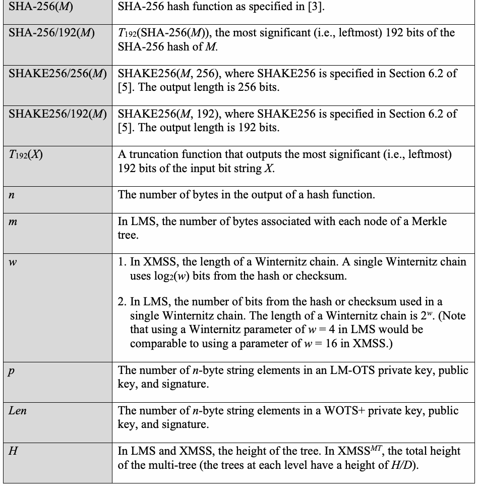
原本PDFの抜粋画像
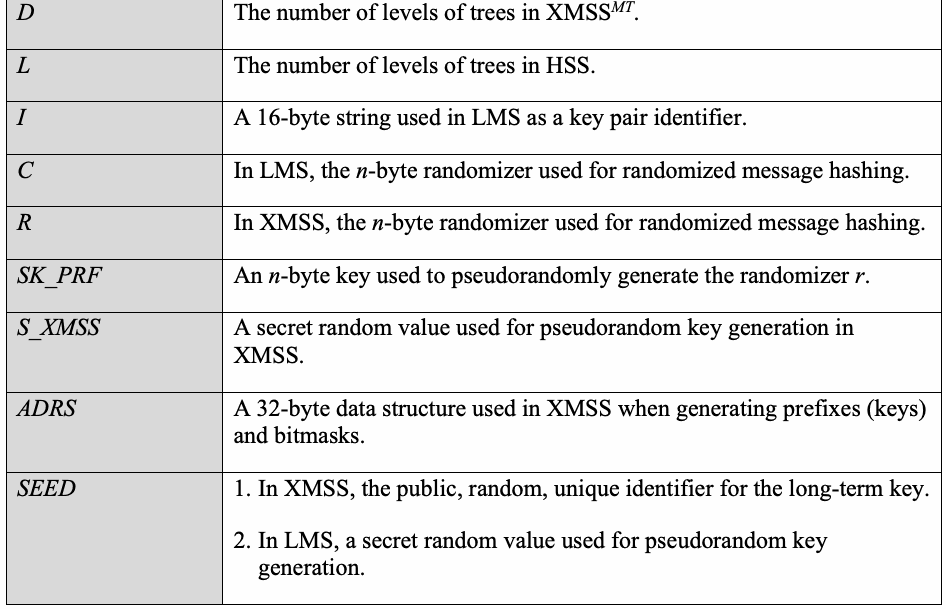
3 General Discussion
3 総論
未レビュー訳At a high level, XMSS and LMS are very similar. They each consist of two components—a one-time signature (OTS) scheme and a method for creating a single, long-term public key from a large set of OTS public keys. A brief explanation of OTS schemes and the method for creating a long-term public key from a large set of OTS public keys can be found in Sections 3 and 4 of [14].
概括すると、XMSSとLMSは非常によく似ている。どちらも2つの要素、すなわち一回限り署名（OTS）方式と、多数のOTS公開鍵から単一の長期公開鍵を作成する方法で構成される。OTS方式および多数のOTS公開鍵から長期公開鍵を作成する方法の概要は、[14]の第3節および第4節に記載されている。
未レビュー訳3.1 One-Time Signature Systems
3.1 一回限り署名方式
未レビュー訳Both LMS and XMSS make use of variants of the Winternitz signature scheme. In the Winternitz signature scheme, the message to be signed is hashed to create a digest; the digest is encoded as a base number;1 and then each digit of the digest is signed using a hash chain, as follows.
LMSとXMSSはいずれも、Winternitz署名方式の派生形を利用する。Winternitz署名方式では、署名対象メッセージをハッシュしてダイジェストを作成し、そのダイジェストを基数表現の数に符号化する。次に、以下のようにハッシュ連鎖を用いてダイジェストの各桁に署名する。
未レビュー訳A hbash chain is created by first randomly generating a secret value, , which is the private key. The size of should generally correspond to the targeted security strength of the scheme. So, for the parameter sets approved by this recommendation, will be eitxher 192 or 256 bits in length. The publicxkey, , is then created by applying the hash function, , to the secret times, . Figure 1 shows an example of a hash chaixn for the th digit of a digest where is 4.
ハッシュ連鎖は、秘密値x（秘密鍵）をランダムに生成することから始まる。xのサイズは、通常、方式が目標とするセキュリティ強度に対応させる。したがって本勧告で承認するパラメータセットでは、xの長さは192ビットまたは256ビットのいずれかとなる。公開鍵pubは、秘密値xにハッシュ関数Hをb−1回適用してH^{b−1}(x)を計算することで生成する。図1は、b=4の場合にダイジェストの第k桁に対して用いるハッシュ連鎖の例を示す。
未レビュー訳pub
pub
未レビュー訳H
未レビュー訳b – 1
b − 1
未レビュー訳𝑏𝑏−1 𝐻𝐻 (𝑥𝑥)
H^{b−1}(x)
未レビュー訳k
未レビュー訳b
未レビュー訳𝐻𝐻(𝑥𝑥𝑘𝑘)FigureH1: A sampl𝐻𝐻e W�𝐻𝐻in(te𝑥𝑥r𝑘𝑘n)it�z chaiHn for b = 4 𝑝𝑝𝑝𝑝𝑝𝑝𝑘𝑘 = 𝐻𝐻 �𝐻𝐻�𝐻𝐻(𝑥𝑥𝑘𝑘)��
図1：b=4の場合のWinternitz連鎖の例。pubₖ=H^{b−1}(xₖ)。
未レビュー訳𝑥𝑥𝑘𝑘 H
xₖ H
未レビュー訳The th digit of the digest, , is signed by applying the hash function, , to the private key
ダイジェストの第k桁Nₖは、秘密鍵xₖにハッシュ関数HをNₖ回適用して署名する（H^{Nₖ}(xₖ)）。
未レビュー訳. Figure 2 shows an example of a signature for the th digit of the digest created
図2は、ダイジェストの第k桁に対する署名の生成例を示す。
未レビュー訳times,
原文のみ
原文のみ
原文のみ
usikng the𝑁𝑁W𝑘𝑘 internitz chaiNn in Figure 1 when is 1. As shown, the sigHnature is
この例では、図1のWinternitz連鎖を用い、Nₖ=1とする。図に示すとおり、署名sₖはH(xₖ)である。
未レビュー訳原文のみ
.𝐻𝐻Fig(u𝑥𝑥re𝑘𝑘)2 also shows how the signature, , can be verifiedk. The hash function, 1, is applied to twice, and if the resulting valuNe kis the same as the public key, 𝑠𝑠,𝑘𝑘th=en𝐻𝐻th(e𝑥𝑥𝑘𝑘) =
図2は、署名sₖの検証方法も示す。ハッシュ関数Hをsₖに2回適用し、その結果が公開鍵pubₖと一致すれば、
未レビュー訳s𝐻𝐻ig(n𝑥𝑥a𝑘𝑘t)ure is valid. In general, the signature forstkhe th digit of a digest can be verifieHd by
署名は有効である。一般に、ダイジェストの第k桁の署名は、
未レビュー訳原文のみ
原文のみ
checkingsthat
次の等式を確認することで検証できる：
未レビュー訳pub
原文のみ
原文のみ
原文のみ
𝑏𝑏−1−𝑁𝑁𝑘𝑘 𝑝𝑝𝑝𝑝𝑝𝑝𝑘𝑘 = 𝐻𝐻 (𝑠𝑠𝑘𝑘)
pubₖ = H^{b−1−Nₖ}(sₖ)
未レビュー訳𝑥𝑥𝑘𝑘 H
xₖ → H
未レビュー訳𝑠𝑠𝑘𝑘 = 𝐻𝐻(𝑥𝑥𝑘𝑘)
sₖ = H(xₖ)
未レビュー訳Figure 2: A𝑠𝑠𝑘𝑘sampleHWinternitz s𝐻𝐻ign(𝑠𝑠a𝑘𝑘tu)re generHation and verific𝑝𝑝a𝑝𝑝ti𝑝𝑝o𝑘𝑘n ≟ 𝐻𝐻�𝐻𝐻(𝑠𝑠𝑘𝑘)�
図2：Winternitz署名の生成および検証の例。公開鍵pubₖ=H(H(sₖ))との照合により検証する。
未レビュー訳As noted in [14], simply signing the individual digits of the digest is not sufficient because an attacker would be able to generate valid signatures for other message digests. For example, given , as in Figure 2, an attacker would be able to generate a signature for a message digest with a th digit of 2 by applying to once or to a message digest with a th digit of 3 𝑠𝑠b𝑘𝑘y =app𝐻𝐻ly(𝑥𝑥in𝑘𝑘g) to twice. An attacker could not, however, generate a signature for a message digest withka th digit of 0 as this wouHld requ𝑠𝑠i𝑘𝑘re finding some value such that k
[14]で指摘されているように、ダイジェストの各桁に単純に署名するだけでは不十分である。攻撃者が別のメッセージダイジェストに対する有効な署名を生成できてしまうためである。たとえば、図2のsₖ=H(xₖ)が与えられると、Hをsₖに1回適用して第k桁が2のダイジェストへの署名を、2回適用して第k桁が3のダイジェストへの署名を生成できる。しかし第k桁が0のダイジェストへの署名は生成できない。これにはH(y)=sₖとなる値yを見つける必要があるが、Hが原像計算困難である限り、その計算は実行可能ではない。
未レビュー訳原文のみ
which wouHld not 𝑠𝑠b𝑘𝑘e feasible as long as is preimage-resistant.
Hが原像計算困難である限り、これは実行可能ではない。
未レビュー訳𝐻𝐻(𝑦𝑦) = 𝑠𝑠𝑘𝑘
原文のみ
原文のみ
原文のみ
In order to protect against the above aHttack, the Winternitz signature scheme computes a checksum of the message digest and signs the checksum along with the digest. For an -digit message digest, the checksum is computed as
上記の攻撃を防ぐため、Winternitz署名方式ではメッセージダイジェストのチェックサムを計算し、ダイジェストとともに署名する。n桁のメッセージダイジェストの場合、チェックサムは次の式で計算する。
未レビュー訳. The checksum is designed so
Σ_{k=0}^{n−1}(b−1−Nₖ)
未レビュー訳that the value is non-negative, and any increase 𝑛𝑛in−1a digit in the message digest will rnesult in the checksum becoming smaller. This prevents an∑a𝑘𝑘tt=a0c(k𝑝𝑝er−fr1om−c𝑁𝑁r𝑘𝑘ea)ting an effective forgery from a message signature since the attacker can only increase values within the message digest and cannot decrease values within the checksum.
チェックサムは非負となるよう設計されており、メッセージダイジェストの桁の値を増やすとチェックサムは小さくなる。この仕組みにより、攻撃者がメッセージ署名を有効に偽造することを防ぐ。攻撃者はメッセージダイジェスト内の値を増やすことしかできず、チェックサム内の値を減らせないためである。
未レビュー訳Figure 3 shows an example of a signature for a 32-bit message digest using b = 16. The digest is written as eight hexadecimal digits, and a separate hash chain is used to sign each digit with each hash chain having its own private key.2
図3は、b = 16を用いて32ビットのメッセージダイジェストに署名する例を示す。ダイジェストは8桁の16進数で表され、各桁の署名には個別のハッシュチェーンを用いる。各ハッシュチェーンには、それぞれ専用の秘密鍵がある。²
未レビュー訳Digest
ダイジェスト
未レビュー訳Checksum
チェックサム
未レビュー訳Digest 6 3 F 1 E 9 0 B
原文のみ
3 D
原文のみ
Private x x x x x x x x
秘密鍵 x₀ x₁ x₂ x₃ x₄ x₅ x₆ x₇
未レビュー訳x x
x₈ x₉
未レビュー訳0 1 2 3 4 5 6 7
原文のみ
8 9
原文のみ
Key
鍵
未レビュー訳Signature H6(x ) H3(x ) H15(x ) H(x ) H14(x ) H9(x ) x H11(x ) H3(x ) H13(x )
署名 H⁶(x₀) H³(x₁) H¹⁵(x₂) H(x₃) H¹⁴(x₄) H⁹(x₅) x₆ H¹¹(x₇) H³(x₈) H¹³(x₉)
未レビュー訳0 1 2 3
原文のみ
4 5 6
原文のみ
原文のみ
8 9
原文のみ
Public H15(x ) H15(x ) H15(x ) H15(x ) H15(x ) H15(x ) H15(x ) H15(x ) H15(x ) H15(x ) 0 1 2 3 4 5 6 7
公開鍵 H¹⁵(x₀) H¹⁵(x₁) H¹⁵(x₂) H¹⁵(x₃) H¹⁵(x₄) H¹⁵(x₅) H¹⁵(x₆) H¹⁵(x₇) H¹⁵(x₈) H¹⁵(x₉)
未レビュー訳8 9
原文のみ
Key
原文のみ
Figure 3: A sample Winternitz signature
図3：Winternitz署名の例
未レビュー訳3.2 Merkle Trees
3.2 Merkle木
未レビュー訳While a single, long-term public key could be created from a large set of OTS public keys by simply concatenating the keys together, the resulting public key would be unacceptably large. XMSS and LMS instead use Merkle hash trees [18], which allow for the long-term public key to be very short in exchange for requiring a small amount of additional information to be provided with each OTS key. To create a hash tree, the OTS public keys are hashed once to form the leaves of the tree, and these hashes are then hashed together in pairs to form the next level up. Those hash values are then hashed together in pairs, the resulting hash values are hashed together, and so on until all of the public keys have been used to generate a single hash value (the root of the tree), which will be used as the long-term public key.
大量のOTS公開鍵から長期公開鍵を作る方法として、鍵を単純に連結することもできるが、その場合、公開鍵が許容できないほど大きくなる。XMSSとLMSは代わりにMerkleハッシュ木[18]を用いる。これにより、各OTS鍵とともに少量の追加情報を渡す必要がある一方、長期公開鍵を非常に短くできる。ハッシュ木を作るには、OTS公開鍵を1回ハッシュして木の葉とし、そのハッシュ値をペアごとにハッシュして1つ上の階層を作る。次に、そのハッシュ値をペアごとにハッシュし、得られた値をさらにハッシュする。この処理を、すべての公開鍵から1つのハッシュ値（木の根）が生成されるまで繰り返す。この根を長期公開鍵として用いる。
未レビュー訳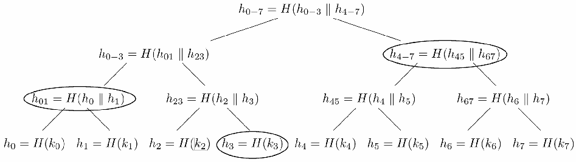
Merkleハッシュ木。葉には8個のOTS公開鍵をハッシュした値 h₀～h₇ が並び、隣接する値を順にハッシュして中間ノード h₀₋₃、h₄₋₇ を作る。最後に両者をハッシュし、長期公開鍵 h₀₋₇ を得る。
Figure 4: A Merkle Hash Tree
図4：Merkleハッシュ木
未レビュー訳Figure 4 depicts a hash tree that contains eight OTS public keys (k … k ). The eight keys are0 7 each hashed to form the leaves of the tree (h … h ), and the eight leaf values are hashed in pairs 0 7 to create the next level up in the tree (h h h h ). These four hash values are again hashed in 01, 23, 45, 67 pairs to create h and h , which are hashed together to create the long-term public key, h .
図4は、8個のOTS公開鍵（k₀～k₇）を含むハッシュ木を示す。8個の鍵をそれぞれハッシュして木の葉（h₀～h₇）を作り、葉の値をペアごとにハッシュして次の階層（h₀₁、h₂₃、h₄₅、h₆₇）を作る。これら4つの値を再びペアごとにハッシュしてh₀₋₃とh₄₋₇を作り、さらに両者をハッシュして長期公開鍵h₀₋₇を得る。
未レビュー訳0−3 4−7
原文のみ
0−7
原文のみ
In order for an entity that had already received h in a secure manner to verify a message 0−7 signed using k , the signer would need to provide h , h , and h in addition to k . The verifier
長期公開鍵h₀₋₇を安全な方法で既に受け取った主体が、k₂で署名されたメッセージを検証するには、署名者はk₂に加えてh₃、h₀₁、h₄₋₇を提示する必要がある。検証者は次の値を計算する。
未レビュー訳原文のみ
3 01 4−7
原文のみ
原文のみ
would compute
検証者は次の値を計算する。
未レビュー訳原文のみ
原文のみ
, and
原文のみ
. If′ is the s′ame as h0′−7, then k′2 may be used to′ verify the′ message signature. ℎ2 =′ 𝐻𝐻(𝑘𝑘2) ℎ23 = 𝐻𝐻(ℎ2||ℎ3) ℎ0−3 = 𝐻𝐻(ℎ01||ℎ23) ℎ0−7 =
h′₂ = H(k₂)、h′₂₃ = H(h′₂ || h₃)、h′₀₋₃ = H(h₀₁ || h′₂₃)、h′₀₋₇ = H(h′₀₋₃ || h₄₋₇) とする。h′₀₋₇がh₀₋₇と等しければ、k₂を用いてメッセージ署名を検証できる。
未レビュー訳′ 𝐻𝐻3.(3ℎ0−T3w||oℎ-4L−e7v)el Tℎre0−e7s
3.3 2段階木
未レビュー訳Both [1] and [2] define single tree and multi-tree variants of their signature schemes. In an instance that involves two levels of trees, as shown in Figure 5, the OTS keys that form the leaves of the top-level tree sign the roots of the trees at the bottom level, and the OTS keys that form the leaves of the bottom-level trees are used to sign the messages. The root of the top-level tree is the long-term public key for the signature scheme.3
[1]と[2]はいずれも、署名方式の単一木と複数木の変種を定義している。図5に示す2階層の木では、最上位の木の葉を構成するOTS鍵が下位の木の根に署名し、下位の木の葉を構成するOTS鍵がメッセージに署名する。最上位の木の根が、その署名方式の長期公開鍵となる。³
未レビュー訳As described in Section 7, the use of two levels of trees can make it easier to distribute OTS keys across multiple cryptographic modules in order to protect against private key loss. A set of OTS keys can be created in one cryptographic module, and the root of the Merkle tree formed from these keys can be published as the public key for the signature scheme. OTS keys can then be created on multiple other cryptographic modules with a separate Merkle tree created for the OTS keys of each of the other cryptographic modules, and a different OTS key from the first cryptographic module can be used to sign each of the roots of the other cryptographic modules.
7節で説明するように、2階層の木を使うと、秘密鍵の喪失を防ぐ目的で、複数の暗号モジュールにOTS鍵を分散しやすくなる。1つの暗号モジュールでOTS鍵の集合を作成し、その鍵から構成したMerkle木の根を署名方式の公開鍵として公開できる。その後、他の複数の暗号モジュールでもOTS鍵を作成し、それぞれのモジュールのOTS鍵について個別のMerkle木を作る。最初の暗号モジュールにある別々のOTS鍵を使って、各モジュールのMerkle木の根に署名できる。
未レビュー訳root a
根 rootₐ
未レビュー訳ka,0 ka,1 ka,2 ka,3
OTS鍵 kₐ,₀ kₐ,₁ kₐ,₂ kₐ,₃
未レビュー訳rootb,1
根 root_b,1
未レビュー訳rootb,3
根 root_b,3
未レビュー訳rootb,0
根 root_b,0
未レビュー訳rootb,2
根 root_b,2
未レビュー訳kb,0 kb,1 kb,2 kb,3 kb,4 kb,5 kb,6 kb,7 kb,8 kb,9 kb,10 kb,11 kb,12 kb,13 kb,14 kb,15
OTS鍵 k_b,0 k_b,1 k_b,2 k_b,3 k_b,4 k_b,5 k_b,6 k_b,7 k_b,8 k_b,9 k_b,10 k_b,11 k_b,12 k_b,13 k_b,14 k_b,15
未レビュー訳Figure 5: A two-Level Merkle tree
図5：2階層のMerkle木
未レビュー訳While there are benefits in the use of a two-level tree, it results in larger signatures and slower signature verification as each message signature will need to include two OTS signatures. For example, if a message were signed using OTS key k in Figure 5, the signature would need to b,6 include the signature on root using k in addition to the signature on the message using k .
2階層の木には利点がある一方、署名が大きくなり、各メッセージ署名に2つのOTS署名を含める必要があるため、署名検証も遅くなる。たとえば、図5のOTS鍵 k_b,6 でメッセージに署名する場合、メッセージへの署名に加えて、k_a,1 で root_b,1 に署名したものも含める必要がある。
未レビュー訳b,1 a,1
原文のみ
b,6
原文のみ
3.4 Prefixes and Bitmasks
3.4 接頭辞とビットマスク
In order to strengthen the security of the schemes in both XMSS and LMS, a prefix is prepended whenever a value is hashed. For example, when computing the public key for a Winternitz signature from the private key in LMS as described in Section 3.1, rather than just computing , the public key is computed as
XMSSとLMSの方式の安全性を強化するため、値をハッシュするたびに接頭辞を先頭に付ける。たとえば、3.1節で説明したLMSのWinternitz署名について、秘密鍵から公開鍵を計算する際、単に H³(xₖ) = H(H(H(xₖ))) と計算するのではなく、公開鍵を次のように計算する。
未レビュー訳原文のみ
𝑝𝑝𝑝𝑝𝑝𝑝𝑘𝑘 = 𝐻𝐻 (𝑥𝑥𝑘𝑘) = 𝐻𝐻 �𝐻𝐻�𝐻𝐻(𝑥𝑥𝑘𝑘,)w��here p1, p2, and p3 are each differ𝑝𝑝e𝑝𝑝nt𝑝𝑝p𝑘𝑘r=efix values. The prefix is formed by concatenating together various pieces of information, including a unique identifier for 𝐻𝐻 �𝑝𝑝3 || 𝐻𝐻�𝑝𝑝2 || 𝐻𝐻(𝑝𝑝1 || 𝑥𝑥𝑘𝑘)�� the long-term public key and an indicator of the purpose of the hash (e.g., Winternitz chain or Merkle tree). If the hash is part of a Winternitz chain, then the prefix also includes the number of the OTS key, which digit of the digest or checksum is being signed, and where in the chain the hash appears. The goal is to ensure that every single hash that is computed within the LMS scheme uses a different prefix.
pubₖ = H(p₃ || H(p₂ || H(p₁ || xₖ)))。ここで p₁、p₂、p₃ はそれぞれ異なる接頭辞値である。接頭辞は、長期公開鍵の一意な識別子や、ハッシュの目的（WinternitzチェーンやMerkle木など）を示す情報など、複数の情報を連結して作る。ハッシュがWinternitzチェーンの一部である場合、接頭辞にはOTS鍵の番号、署名対象となるダイジェストまたはチェックサムの桁、チェーン内での位置も含まれる。目的は、LMS方式内で計算されるすべてのハッシュに異なる接頭辞を使うことである。
未レビュー訳XMSS generates its prefixes in a similar way. The information described above is used to form an address, which uniquely identifies where a particular hash invocation occurs within the scheme. This address is then hashed along with a unique identifier (SEED) for the long-term public key to create the prefix.
XMSSも同様の方法で接頭辞を生成する。上記の情報を使ってアドレスを作成し、方式内で特定のハッシュ呼び出しが行われる位置を一意に識別する。このアドレスを長期公開鍵の一意な識別子（SEED）とともにハッシュし、接頭辞を作る。
未レビュー訳Unlike LMS, XMSS also uses bitmasks. Similar to the generation of the prefix, a slightly different address is hashed along with the SEED to create a bitmask, which is exclusive-ORed with the value to be hashed (the input). The prefix and masked input value are concatenated as specified in [1] to form the input to the hash function.4 Figure 6 illustrates an example of this computation when the input is a Winternitz chaining value. In [1], the hash function is referred to as H, H_msg, F, or PRF, depending on where it is being used. However, in each case, it is the same function, just with a different prefix prepended in order to ensure separation between the uses.
LMSとは異なり、XMSSはビットマスクも用いる。接頭辞の生成と同様に、少し異なるアドレスをSEEDとともにハッシュしてビットマスクを作り、ハッシュ対象の値（入力）との排他的論理和を取る。[1]に従って、接頭辞とビットマスクを適用した入力値を連結し、ハッシュ関数への入力とする。⁴ 図6は、入力がWinternitzチェーン値である場合の計算例を示す。[1]では、ハッシュ関数を使用箇所に応じてH、H_msg、F、PRFと表記するが、いずれも同一の関数である。用途ごとに異なる接頭辞を付け、用途を分離する。
未レビュー訳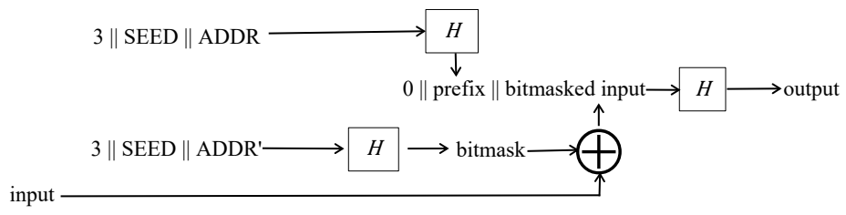
接頭辞用アドレス 3 || SEED || ADDR をハッシュ関数 H に入力する経路。
3 || SEED || ADDR
3 || SEED || ADDR
未レビュー訳原文のみ
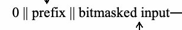
0、接頭辞、ビットマスク適用後の入力を連結し、ハッシュ関数 H に渡して出力を得る経路。
output
出力
未レビュー訳0 || prefix || bitmasked input
0 || 接頭辞 || ビットマスク適用後の入力
未レビュー訳⊕ H
原文のみ
接頭辞用アドレス 3 || SEED || ADDR′ をハッシュ関数 H に入力し、ビットマスクを生成して、元の入力との排他的論理和に使う経路。
3 || SEED || ADDR'
3 || SEED || ADDR′
未レビュー訳bitmask
ビットマスク
未レビュー訳input
入力
未レビュー訳原文のみ
Figure 6: XMSS hash computation with prefix and bitmask
図6：接頭辞とビットマスクを用いたXMSSのハッシュ計算
未レビュー訳4 Leighton-Micali Signatures (LMS) Parameter Sets
4 Leighton-Micali署名（LMS）のパラメーターセット
未レビュー訳The LMS and HSS algorithms are described in RFC 8554 [2]. This Special Publication approves the use of LMS and HSS with four different hash functions: SHA-256, SHA-256/192, SHAKE256/256, and SHAKE256/192 (see Section 2.3). The parameter sets that use SHA-256 are defined in RFC 8554 [2]. The parameter sets that use SHA-256/192, SHAKE256/256, and SHAKE256/192 are defined in this publication.
LMSおよびHSSアルゴリズムはRFC 8554[2]で説明されている。本書は、SHA-256、SHA-256/192、SHAKE256/256、SHAKE256/192の4種類のハッシュ関数を用いたLMSおよびHSSの使用を承認する（2.3節参照）。SHA-256を用いるパラメーターセットはRFC 8554[2]で定義されている。SHA-256/192、SHAKE256/256、SHAKE256/192を用いるパラメーターセットは本書で定義する。
When generating a key pair for an LMS instance, each LM-OTS key in the system shall use the same parameter set, and the hash function used for the LMS system shall be the same as the hash function used in the LM-OTS keys. The height of the tree (h) shall be 5, 10, 15, 20, or 25.
LMSインスタンスの鍵ペアを生成する際、システム内の各LM-OTS鍵は同じパラメーターセットを使用しなければならず、LMSシステムで使用するハッシュ関数はLM-OTS鍵で使用するものと同じでなければならない。木の高さhは5、10、15、20、または25でなければならない。
未レビュー訳When generating a key pair for an HSS instance, the requirements specified in the previous paragraph apply to each LMS tree in the instance. If the HSS instance has more than one level, then the hash function used for the tree at level 0 shall be used for every LMS tree at every other level. For each level, the same LMS and LM-OTS parameter sets shall be used for every LMS tree at that level. Different LMS and LM-OTS parameter sets may be used at different levels, as long as all chosen parameter sets use the same hash function.
HSSインスタンスの鍵ペアを生成する際は、前段落の要件をインスタンス内の各LMS木に適用する。HSSインスタンスが複数の階層を持つ場合、階層0の木で用いるハッシュ関数を、他のすべての階層のLMS木でも用いなければならない。各階層では、その階層内のすべてのLMS木に同じLMSおよびLM-OTSパラメーターセットを使用しなければならない。選択したすべてのパラメーターセットが同じハッシュ関数を用いる限り、階層ごとに異なるLMSおよびLM-OTSパラメーターセットを使用してもよい。
未レビュー訳The LMS and LM-OTS parameter sets that are approved for use by this Special Publication are specified in tables in Sections 4.1 through 4.4. The parameters n, w, p, m, and h specified in the tables are defined in Sections 4.1 and 5.1 of [2].
本書で使用が承認されるLMSおよびLM-OTSのパラメーターセットを、4.1節から4.4節の表に示す。表に示すn、w、p、m、hの定義は[2]の4.1節および5.1節に記載されている。
未レビュー訳Extensions to the XDR syntax in Section 3.3 of [2] needed to support the parameter sets defined in Sections 4.2 through 4.4 of this document are specified in Appendix A. The numeric identifiers for these parameter sets are marked as “TBD” since they had not yet been assigned at the time this document was published. Once they are assigned, the numeric identifiers may be found at https://www.iana.org/assignments/leighton-micali-signatures/leighton-micali-signatures.xhtml.
本書の4.2節から4.4節で定義するパラメーターセットをサポートするために必要な、[2]の3.3節のXDR構文の拡張を付録Aに示す。これらのパラメーターセットの数値識別子は、本書の発行時点で未割当てであったため「TBD」と記されている。割当て後は、次のIANAページで数値識別子を確認できる：https://www.iana.org/assignments/leighton-micali-signatures/leighton-micali-signatures.xhtml
未レビュー訳4.1 LMS with SHA-256
4.1 SHA-256を用いるLMS
When generating LMS or HSS key pairs using SHA-256, the LMS and LM-OTS parameter sets shall be selected from the following two tables, which come from Sections 4 and 5 of [2].
SHA-256を用いてLMSまたはHSSの鍵ペアを生成する場合、LMSおよびLM-OTSのパラメーターセットは、[2]の4節および5節に由来する次の2つの表から選択しなければならない。
Table 1: LM-OTS parameter sets for SHA-256
表1：SHA-256用LM-OTSパラメーターセット
未レビュー訳| LM-OTS Parameter Sets | Numeric | n | w | P |
| Identifier | ||||
| LMOTS_SHA256_N32_W1 | 0x00000001 | 32 | 1 | 265 |
| LMOTS_SHA256_N32_W2 | 0x00000002 | 32 | 2 | 133 |
| LMOTS_SHA256_N32_W4 | 0x00000003 | 32 | 4 | 67 |
| LMOTS_SHA256_N32_W8 | 0x00000004 | 32 | 8 | 34 |
原本PDFの抜粋画像
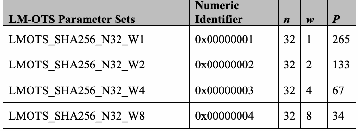
| LM-OTSパラメーターセット | 数値識別子 | n | w | P |
| LMOTS_SHA256_N32_W1 | 0x00000001 | 32 | 1 | 265 |
| LMOTS_SHA256_N32_W2 | 0x00000002 | 32 | 2 | 133 |
| LMOTS_SHA256_N32_W4 | 0x00000003 | 32 | 4 | 67 |
| LMOTS_SHA256_N32_W8 | 0x00000004 | 32 | 8 | 34 |
Table 2: LMS parameter sets for SHA-256
表2：SHA-256用LMSパラメーターセット
未レビュー訳| LMS Parameter Sets | Numeric Identifier | m | h |
| LMS_SHA256_M32_H5 | 0x00000005 | 32 | 5 |
| LMS_SHA256_M32_H10 | 0x00000006 | 32 | 10 |
| LMS_SHA256_M32_H15 | 0x00000007 | 32 | 15 |
| LMS_SHA256_M32_H20 | 0x00000008 | 32 | 20 |
| LMS_SHA256_M32_H25 | 0x00000009 | 32 | 25 |
原本PDFの抜粋画像
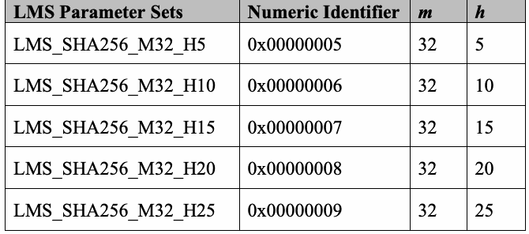
| LMSパラメーターセット | 数値識別子 | m | h |
| LMS_SHA256_M32_H5 | 0x00000005 | 32 | 5 |
| LMS_SHA256_M32_H10 | 0x00000006 | 32 | 10 |
| LMS_SHA256_M32_H15 | 0x00000007 | 32 | 15 |
| LMS_SHA256_M32_H20 | 0x00000008 | 32 | 20 |
| LMS_SHA256_M32_H25 | 0x00000009 | 32 | 25 |
4.2 LMS with SHA-256/192
4.2 SHA-256/192を用いるLMS
When generating LMS or HSS key pairs using SHA-256/192, the LMS and LM-OTS parameter sets shall be selected from the following two tables.
SHA-256/192を用いてLMSまたはHSSの鍵ペアを生成する場合、LMSおよびLM-OTSのパラメーターセットは次の2つの表から選択しなければならない。
Table 3: LM-OTS parameter sets for SHA-256/192
表3：SHA-256/192用LM-OTSパラメーターセット
未レビュー訳| LM-OTS Parameter Sets | Numeric Identifier | n | w | P |
| LMOTS_SHA256_N24_W1 | TBD | 24 | 1 | 200 |
| LMOTS_SHA256_N24_W2 | TBD | 24 | 2 | 101 |
| LMOTS_SHA256_N24_W4 | TBD | 24 | 4 | 51 |
| LMOTS_SHA256_N24_W8 | TBD | 24 | 8 | 26 |
原本PDFの抜粋画像
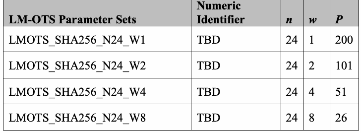
| LM-OTSパラメーターセット | 数値識別子 | n | w | P |
| LMOTS_SHA256_N24_W1 | TBD | 24 | 1 | 200 |
| LMOTS_SHA256_N24_W2 | TBD | 24 | 2 | 101 |
| LMOTS_SHA256_N24_W4 | TBD | 24 | 4 | 51 |
| LMOTS_SHA256_N24_W8 | TBD | 24 | 8 | 26 |
Table 4: LMS parameter sets for SHA-256/192
表4：SHA-256/192用LMSパラメーターセット
未レビュー訳| LMS Parameter Sets | Numeric Identifier | m | h |
| LMS_SHA256_M24_H5 | TBD | 24 | 5 |
| LMS_SHA256_M24_H10 | TBD | 24 | 10 |
| LMS_SHA256_M24_H15 | TBD | 24 | 15 |
| LMS_SHA256_M24_H20 | TBD | 24 | 20 |
| LMS_SHA256_M24_H25 | TBD | 24 | 25 |
原本PDFの抜粋画像
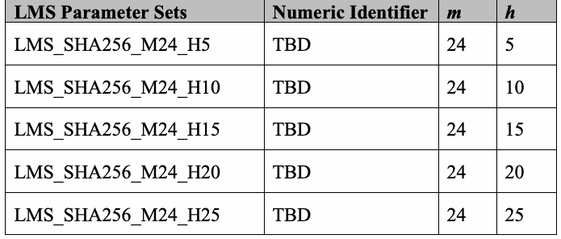
| LMSパラメーターセット | 数値識別子 | m | h |
| LMS_SHA256_M24_H5 | TBD | 24 | 5 |
| LMS_SHA256_M24_H10 | TBD | 24 | 10 |
| LMS_SHA256_M24_H15 | TBD | 24 | 15 |
| LMS_SHA256_M24_H20 | TBD | 24 | 20 |
| LMS_SHA256_M24_H25 | TBD | 24 | 25 |
4.3 LMS with SHAKE256/256
4.3 SHAKE256/256を用いるLMS
When generating LMS or HSS key pairs using SHAKE256/256, the LMS and LM-OTS parameter sets shall be selected from the following two tables.
SHAKE256/256を用いてLMSまたはHSSの鍵ペアを生成する場合、LMSおよびLM-OTSのパラメーターセットは次の2つの表から選択しなければならない。
Table 5: LM-OTS parameter sets for SHAKE256/256
表5：SHAKE256/256用LM-OTSパラメーターセット
未レビュー訳| LM-OTS Parameter Sets | Numeric | n | w | p |
| Identifier | ||||
| LMOTS_SHAKE_N32_W1 | TBD | 32 | 1 | 265 |
| LMOTS_SHAKE_N32_W2 | TBD | 32 | 2 | 133 |
| LMOTS_SHAKE_N32_W4 | TBD | 32 | 4 | 67 |
| LMOTS_SHAKE_N32_W8 | TBD | 32 | 8 | 34 |
原本PDFの抜粋画像
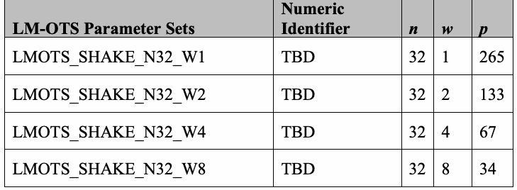
| LM-OTSパラメーターセット | 数値 | n | w | p |
| 識別子 | ||||
| LMOTS_SHAKE_N32_W1 | TBD | 32 | 1 | 265 |
| LMOTS_SHAKE_N32_W2 | TBD | 32 | 2 | 133 |
| LMOTS_SHAKE_N32_W4 | TBD | 32 | 4 | 67 |
| LMOTS_SHAKE_N32_W8 | TBD | 32 | 8 | 34 |
Table 6: LMS parameter sets for SHAKE256/256
表6：SHAKE256/256用LMSパラメーターセット
未レビュー訳| LMS Parameter Sets | Numeric Identifier | m | h |
| LMS_ SHAKE_M32_H5 | TBD | 32 | 5 |
| LMS_ SHAKE_M32_H10 | TBD | 32 | 10 |
| LMS_ SHAKE_M32_H15 | TBD | 32 | 15 |
| LMS_ SHAKE_M32_H20 | TBD | 32 | 20 |
| LMS_ SHAKE_M32_H25 | TBD | 32 | 25 |
原本PDFの抜粋画像
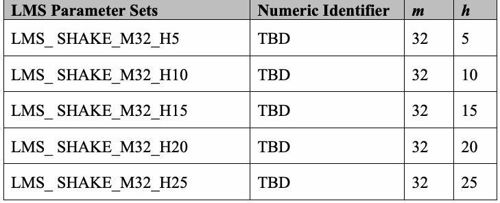
| LMSパラメーターセット | 数値 識別子 | m | h |
| LMS_SHAKE_M32_H5 | TBD | 32 | 5 |
| LMS_SHAKE_M32_H10 | TBD | 32 | 10 |
| LMS_SHAKE_M32_H15 | TBD | 32 | 15 |
| LMS_SHAKE_M32_H20 | TBD | 32 | 20 |
| LMS_SHAKE_M32_H25 | TBD | 32 | 25 |
4.4 LMS with SHAKE256/192
4.4 SHAKE256/192を用いるLMS
When generating LMS or HSS key pairs using SHAKE256/192, the LMS and LM-OTS parameter sets shall be selected from the following two tables.
SHAKE256/192を用いてLMSまたはHSSの鍵ペアを生成する場合、LMSおよびLM-OTSのパラメーターセットは次の2つの表から選択しなければならない。
未レビュー訳Table 7: LM-OTS parameter sets for SHAKE256/192
表7：SHAKE256/192用LM-OTSパラメーターセット
未レビュー訳| LM-OTS Parameter Sets | Numeric | n | w | p |
| Identifier | ||||
| LMOTS_SHAKE_N24_W1 | TBD | 24 | 1 | 200 |
| LMOTS_SHAKE_N24_W2 | TBD | 24 | 2 | 101 |
| LMOTS_SHAKE_N24_W4 | TBD | 24 | 4 | 51 |
| LMOTS_SHAKE_N24_W8 | TBD | 24 | 8 | 26 |
原本PDFの抜粋画像
| LM-OTSパラメーターセット | 数値 | n | w | p |
| 識別子 | ||||
| LMOTS_SHAKE_N24_W1 | TBD | 24 | 1 | 200 |
| LMOTS_SHAKE_N24_W2 | TBD | 24 | 2 | 101 |
| LMOTS_SHAKE_N24_W4 | TBD | 24 | 4 | 51 |
| LMOTS_SHAKE_N24_W8 | TBD | 24 | 8 | 26 |
Table 8: LMS parameter sets for SHAKE256/192
表8：SHAKE256/192用LMSパラメーターセット
未レビュー訳| LMS Parameter Sets | Numeric Identifier | m | h |
| LMS_ SHAKE_M24_H5 | TBD | 24 | 5 |
| LMS_ SHAKE_M24_H10 | TBD | 24 | 10 |
| LMS_ SHAKE_M24_H15 | TBD | 24 | 15 |
| LMS_ SHAKE_M24_H20 | TBD | 24 | 20 |
| LMS_ SHAKE_M24_H25 | TBD | 24 | 25 |
原本PDFの抜粋画像
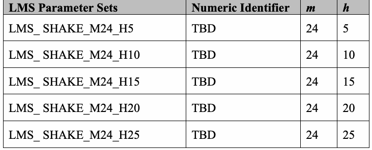
| LMSパラメーターセット | 数値識別子 | m | h |
| LMS_SHAKE_M24_H5 | TBD | 24 | 5 |
| LMS_SHAKE_M24_H10 | TBD | 24 | 10 |
| LMS_SHAKE_M24_H15 | TBD | 24 | 15 |
| LMS_SHAKE_M24_H20 | TBD | 24 | 20 |
| LMS_SHAKE_M24_H25 | TBD | 24 | 25 |
5 eXtended Merkle Signature Scheme (XMSS) Parameter Sets
5 拡張Merkle署名方式（XMSS）のパラメーターセット
未レビュー訳The XMSS and XMSSMT algorithms are described in RFC 8391 [1]. This Special Publication approves the use of XMSS and XMSSMT with four different hash functions: SHA-256, SHA-256/192, SHAKE256/256, and SHAKE256/192 (see Section 2.3).5 The parameter sets that use SHA-256 are defined in RFC 8391 [1]. The parameter sets that use SHA-256/192, SHAKE256/256, and SHAKE256/192 are defined below.
XMSSおよびXMSSMTアルゴリズムはRFC 8391[1]で説明されている。本書は、SHA-256、SHA-256/192、SHAKE256/256、SHAKE256/192の4種類のハッシュ関数を用いたXMSSおよびXMSSMTの使用を承認する（2.3節参照）。⁵ SHA-256を用いるパラメーターセットはRFC 8391[1]で定義されている。SHA-256/192、SHAKE256/256、SHAKE256/192を用いるパラメーターセットは以下で定義する。
未レビュー訳The WOTS+ parameters that correspond to the use of each of these hash functions are specified in the following table.
各ハッシュ関数に対応するWOTS+パラメーターを次の表に示す。
未レビュー訳Table 9: WOTS+ parameter sets
表9：WOTS+パラメーターセット
未レビュー訳| Parameter Sets | Numeric Identifier | F / PRF | n | w | len |
| WOTSP-SHA2_256 | 0x00000001 | See Section 5.1 | 32 | 16 | 67 |
| WOTSP-SHA2_192 | 0x00000005 | See Section 5.2 | 24 | 16 | 51 |
| WOTSP-SHAKE256_256 | 0x00000006 | See Section 5.3 | 32 | 16 | 67 |
| WOTSP-SHAKE256_192 | 0x00000007 | See Section 5.4 | 24 | 16 | 51 |
原本PDFの抜粋画像
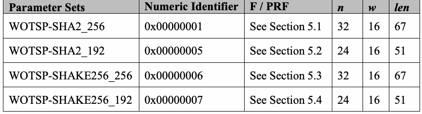
| パラメーターセット | 数値識別子 | F / PRF | n | w | len |
| WOTSP-SHA2_256 | 0x00000001 | 5.1節参照 | 32 | 16 | 67 |
| WOTSP-SHA2_192 | 0x00000005 | 5.2節参照 | 24 | 16 | 51 |
| WOTSP-SHAKE256_256 | 0x00000006 | 5.3節参照 | 32 | 16 | 67 |
| WOTSP-SHAKE256_192 | 0x00000007 | 5.4節参照 | 24 | 16 | 51 |
The XMSS and XMSSMT parameter sets that are approved for use by this Special Publication are specified in Sections 5.1 through 5.4. The parameters n, w, len, h, and d specified in the tables are defined in Sections 3.1.1, 4.1.1, and 4.2.1 of [1].
本書で使用が承認されるXMSSおよびXMSSMTのパラメーターセットを5.1節から5.4節に示す。表に示すn、w、len、h、dの定義は[1]の3.1.1節、4.1.1節、4.2.1節に記載されている。
未レビュー訳Extensions to the XDR syntax in Appendices A, B, and C of [1] needed to support the parameter sets defined in Sections 5.2 through 5.4 of this document are specified in Appendix B.
本書の5.2節から5.4節で定義するパラメーターセットをサポートするために必要な、[1]の付録A、B、CのXDR構文の拡張を付録Bに示す。
5.1 XMSS and XMSSMT with SHA-256
5.1 SHA-256を用いるXMSSおよびXMSSMT
未レビュー訳When generating XMSS or XMSSMT key pairs using SHA-256, the parameter sets shall be selected from the following two tables, which come from Section 5 of [1]. Each of these uses the WOTSP-SHA2_256 parameter set.
SHA-256を用いてXMSSまたはXMSSMTの鍵ペアを生成する場合、パラメーターセットは[1]の5節に由来する次の2つの表から選択しなければならない。いずれもWOTSP-SHA2_256パラメーターセットを用いる。
未レビュー訳Table 10: XMSS parameter sets for SHA-256
表10：SHA-256用XMSSパラメーターセット
未レビュー訳| Parameter Sets | Numeric Identifier | n | w | len | h |
| XMSS-SHA2_10_256 | 0x00000001 | 32 | 16 | 67 | 10 |
| XMSS-SHA2_16_256 | 0x00000002 | 32 | 16 | 67 | 16 |
| XMSS-SHA2_20_256 | 0x00000003 | 32 | 16 | 67 | 20 |
原本PDFの抜粋画像
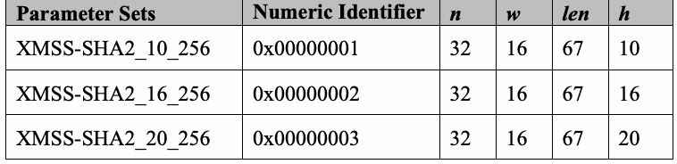
| パラメーターセット | 数値識別子 | n | w | len | h |
| XMSS-SHA2_10_256 | 0x00000001 | 32 | 16 | 67 | 10 |
| XMSS-SHA2_16_256 | 0x00000002 | 32 | 16 | 67 | 16 |
| XMSS-SHA2_20_256 | 0x00000003 | 32 | 16 | 67 | 20 |
Table 11: XMSSMT parameter sets for SHA-256
表11：SHA-256用XMSSMTパラメーターセット
未レビュー訳| Parameter Sets | Numeric Identifier | n | w | len | h | d |
| XMSSMT-SHA2_20/2_256 | 0x00000001 | 32 | 16 | 67 | 20 | 2 |
| XMSSMT-SHA2_20/4_256 | 0x00000002 | 32 | 16 | 67 | 20 | 4 |
| XMSSMT-SHA2_40/2_256 | 0x00000003 | 32 | 16 | 67 | 40 | 2 |
| XMSSMT-SHA2_40/4_256 | 0x00000004 | 32 | 16 | 67 | 40 | 4 |
| XMSSMT-SHA2_40/8_256 | 0x00000005 | 32 | 16 | 67 | 40 | 8 |
| XMSSMT-SHA2_60/3_256 | 0x00000006 | 32 | 16 | 67 | 60 | 3 |
| XMSSMT-SHA2_60/6_256 | 0x00000007 | 32 | 16 | 67 | 60 | 6 |
| XMSSMT-SHA2_60/12_256 | 0x00000008 | 32 | 16 | 67 | 60 | 12 |
原本PDFの抜粋画像
| パラメーターセット | 数値識別子 | n | w | len | h | d |
| XMSSMT-SHA2_20/2_256 | 0x00000001 | 32 | 16 | 67 | 20 | 2 |
| XMSSMT-SHA2_20/4_256 | 0x00000002 | 32 | 16 | 67 | 20 | 4 |
| XMSSMT-SHA2_40/2_256 | 0x00000003 | 32 | 16 | 67 | 40 | 2 |
| XMSSMT-SHA2_40/4_256 | 0x00000004 | 32 | 16 | 67 | 40 | 4 |
| XMSSMT-SHA2_40/8_256 | 0x00000005 | 32 | 16 | 67 | 40 | 8 |
| XMSSMT-SHA2_60/3_256 | 0x00000006 | 32 | 16 | 67 | 60 | 3 |
| XMSSMT-SHA2_60/6_256 | 0x00000007 | 32 | 16 | 67 | 60 | 6 |
| XMSSMT-SHA2_60/12_256 | 0x00000008 | 32 | 16 | 67 | 60 | 12 |
For the parameter sets in this section, the functions F, H, H_msg, and PRF are as defined in Section 5.1 of [1] for SHA2 with n = 32. The function PRF , which is used for key
この節のパラメーターセットでは、F、H、H_msg、PRFはn = 32のSHA2について[1]の5.1節で定義されている。関数PRF_keygenは鍵生成に用いる。
未レビュー訳keygen
原文のみ
generation as specified in Section 6.2, is defined as follows:
6.2節に従い、次のように定義される。
未レビュー訳PRF (KEY, M): SHA-256(toByte(4, 32) || KEY || M). keygen
PRF_keygen(KEY, M)：SHA-256(toByte(4, 32) || KEY || M)。
未レビュー訳5.2 XMSS and XMSSMT with SHA-256/192
5.2 SHA-256/192を用いるXMSSおよびXMSSMT
未レビュー訳When generating XMSS or XMSSMT key pairs using SHA-256/192, the parameter sets shall be selected from the following two tables. Each of these uses the WOTSP-SHA2_192 parameter set.
SHA-256/192を用いてXMSSまたはXMSSMTの鍵ペアを生成する場合、パラメーターセットは次の2つの表から選択しなければならない。いずれもWOTSP-SHA2_192パラメーターセットを用いる。
未レビュー訳Table 12: XMSS parameter sets for SHA-256/192
表12：SHA-256/192用XMSSパラメーターセット
未レビュー訳| Parameter Sets | Numeric Identifier | n | w | len | h |
| XMSS-SHA2_10_192 | 0x0000000D | 24 | 16 | 51 | 10 |
| XMSS-SHA2_16_192 | 0x0000000E | 24 | 16 | 51 | 16 |
| XMSS-SHA2_20_192 | 0x0000000F | 24 | 16 | 51 | 20 |
原本PDFの抜粋画像
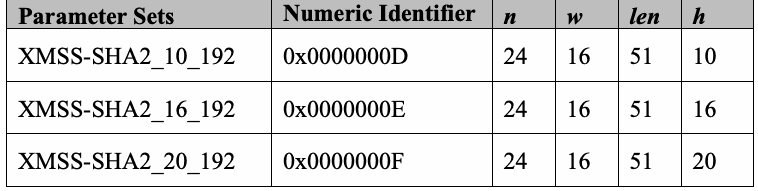
| パラメーターセット | 数値識別子 | n | w | len | h |
| XMSS-SHA2_10_192 | 0x0000000D | 24 | 16 | 51 | 10 |
| XMSS-SHA2_16_192 | 0x0000000E | 24 | 16 | 51 | 16 |
| XMSS-SHA2_20_192 | 0x0000000F | 24 | 16 | 51 | 20 |
Table 13: XMSSMT parameter sets for SHA-256/192
表13：SHA-256/192用XMSSMTパラメーターセット
未レビュー訳| Parameter Sets | Numeric Identifier | n | w | len | h | d |
| XMSSMT-SHA2_20/2_192 | 0x00000021 | 24 | 16 | 51 | 20 | 2 |
| XMSSMT-SHA2_20/4_192 | 0x00000022 | 24 | 16 | 51 | 20 | 4 |
| XMSSMT-SHA2_40/2_192 | 0x00000023 | 24 | 16 | 51 | 40 | 2 |
| XMSSMT-SHA2_40/4_192 | 0x00000024 | 24 | 16 | 51 | 40 | 4 |
| XMSSMT-SHA2_40/8_192 | 0x00000025 | 24 | 16 | 51 | 40 | 8 |
| XMSSMT-SHA2_60/3_192 | 0x00000026 | 24 | 16 | 51 | 60 | 3 |
| XMSSMT-SHA2_60/6_192 | 0x00000027 | 24 | 16 | 51 | 60 | 6 |
| XMSSMT-SHA2_60/12_192 | 0x00000028 | 24 | 16 | 51 | 60 | 12 |
原本PDFの抜粋画像
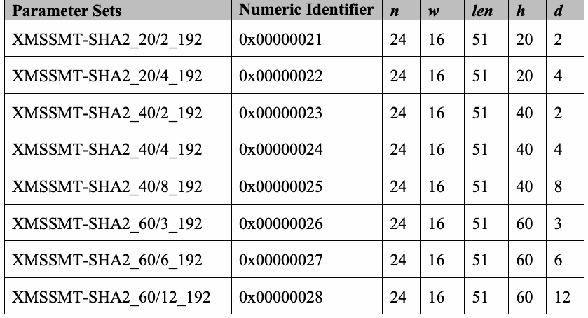
| パラメーターセット | 数値識別子 | n | w | len | h | d |
| XMSSMT-SHA2_20/2_192 | 0x00000021 | 24 | 16 | 51 | 20 | 2 |
| XMSSMT-SHA2_20/4_192 | 0x00000022 | 24 | 16 | 51 | 20 | 4 |
| XMSSMT-SHA2_40/2_192 | 0x00000023 | 24 | 16 | 51 | 40 | 2 |
| XMSSMT-SHA2_40/4_192 | 0x00000024 | 24 | 16 | 51 | 40 | 4 |
| XMSSMT-SHA2_40/8_192 | 0x00000025 | 24 | 16 | 51 | 40 | 8 |
| XMSSMT-SHA2_60/3_192 | 0x00000026 | 24 | 16 | 51 | 60 | 3 |
| XMSSMT-SHA2_60/6_192 | 0x00000027 | 24 | 16 | 51 | 60 | 6 |
| XMSSMT-SHA2_60/12_192 | 0x00000028 | 24 | 16 | 51 | 60 | 12 |
For the parameter sets in this section, the functions F, H, H_msg, PRF, and PRF are defined
この節のパラメーターセットでは、関数F、H、H_msg、PRF、およびPRF_keygenを次のように定義する。
未レビュー訳keygen
原文のみ
as follows:
原文のみ
•F(KEY, M): T (SHA-256(toByte(0, 4) || KEY || M)) 192
•F(KEY, M)：T₁₉₂(SHA-256(toByte(0, 4) || KEY || M))
未レビュー訳•H(KEY, M): T (SHA-256(toByte(1, 4) || KEY || M)) 192
•H(KEY, M)：T₁₉₂(SHA-256(toByte(1, 4) || KEY || M))
未レビュー訳•H_msg(KEY, M): T (SHA-256(toByte(2, 4) || KEY || M)) 192
•H_msg(KEY, M)：T₁₉₂(SHA-256(toByte(2, 4) || KEY || M))
未レビュー訳•PRF(KEY, M): T (SHA-256(toByte(3, 4) || KEY || M)) 192
•PRF(KEY, M)：T₁₉₂(SHA-256(toByte(3, 4) || KEY || M))
未レビュー訳•PRF (KEY, M): T (SHA-256(toByte(4, 4) || KEY || M)) keygen 192
•PRF_keygen(KEY, M)：T₁₉₂(SHA-256(toByte(4, 4) || KEY || M))
未レビュー訳5.3 XMSS and XMSSMT with SHAKE256/256
5.3 SHAKE256/256を用いるXMSSおよびXMSSMT
未レビュー訳When generating XMSS or XMSSMT key pairs using SHAKE256/256, the parameter sets shall be selected from the following two tables. Each of these uses the WOTSP-SHAKE256_256 parameter set.
SHAKE256/256を用いてXMSSまたはXMSSMTの鍵ペアを生成する場合、パラメーターセットは次の2つの表から選択しなければならない。いずれもWOTSP-SHAKE256_256パラメーターセットを用いる。
未レビュー訳Table 14: XMSS parameter sets for SHAKE256/256
表14：SHAKE256/256用XMSSパラメーターセット
未レビュー訳| Parameter Sets | Numeric Identifier | n | w | len | h |
| XMSS-SHAKE256_10_256 | 0x00000010 | 32 | 16 | 67 | 10 |
| XMSS-SHAKE256_16_256 | 0x00000011 | 32 | 16 | 67 | 16 |
| XMSS-SHAKE256_20_256 | 0x00000012 | 32 | 16 | 67 | 20 |
原本PDFの抜粋画像
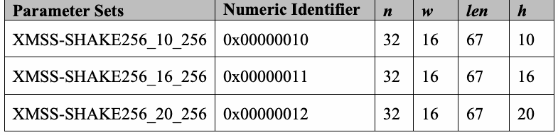
| パラメーターセット | 数値識別子 | n | w | len | h |
| XMSS-SHAKE256_10_256 | 0x00000010 | 32 | 16 | 67 | 10 |
| XMSS-SHAKE256_16_256 | 0x00000011 | 32 | 16 | 67 | 16 |
| XMSS-SHAKE256_20_256 | 0x00000012 | 32 | 16 | 67 | 20 |
Table 15: XMSSMT parameter sets for SHAKE256/256
表15：SHAKE256/256用XMSSMTパラメーターセット
未レビュー訳| Parameter Sets | Numeric Identifier | n | w | len | h | d |
| XMSSMT-SHAKE256_20/2_256 | 0x00000029 | 32 | 16 | 67 | 20 | 2 |
| XMSSMT-SHAKE256_20/4_256 | 0x0000002A | 32 | 16 | 67 | 20 | 4 |
| XMSSMT-SHAKE256_40/2_256 | 0x0000002B | 32 | 16 | 67 | 40 | 2 |
| XMSSMT-SHAKE256_40/4_256 | 0x0000002C | 32 | 16 | 67 | 40 | 4 |
| XMSSMT-SHAKE256_40/8_256 | 0x0000002D | 32 | 16 | 67 | 40 | 8 |
| XMSSMT-SHAKE256_60/3_256 | 0x0000002E | 32 | 16 | 67 | 60 | 3 |
| XMSSMT-SHAKE256_60/6_256 | 0x0000002F | 32 | 16 | 67 | 60 | 6 |
| XMSSMT-SHAKE256_60/12_256 | 0x00000030 | 32 | 16 | 67 | 60 | 12 |
原本PDFの抜粋画像
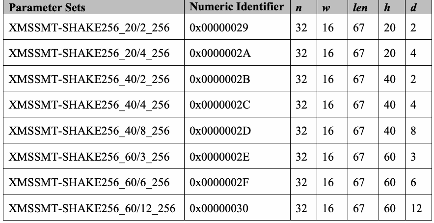
| パラメーターセット | 数値識別子 | n | w | len | h | d |
| XMSSMT-SHAKE256_20/2_256 | 0x00000029 | 32 | 16 | 67 | 20 | 2 |
| XMSSMT-SHAKE256_20/4_256 | 0x0000002A | 32 | 16 | 67 | 20 | 4 |
| XMSSMT-SHAKE256_40/2_256 | 0x0000002B | 32 | 16 | 67 | 40 | 2 |
| XMSSMT-SHAKE256_40/4_256 | 0x0000002C | 32 | 16 | 67 | 40 | 4 |
| XMSSMT-SHAKE256_40/8_256 | 0x0000002D | 32 | 16 | 67 | 40 | 8 |
| XMSSMT-SHAKE256_60/3_256 | 0x0000002E | 32 | 16 | 67 | 60 | 3 |
| XMSSMT-SHAKE256_60/6_256 | 0x0000002F | 32 | 16 | 67 | 60 | 6 |
| XMSSMT-SHAKE256_60/12_256 | 0x00000030 | 32 | 16 | 67 | 60 | 12 |
For the parameter sets in this section, the functions F, H, H_msg, PRF, and PRF are defined
この節のパラメーターセットでは、関数F、H、H_msg、PRF、およびPRF_keygenを次のように定義する。
未レビュー訳keygen
原文のみ
as follows:
原文のみ
•F(KEY, M): SHAKE256(toByte(0, 32) || KEY || M, 256)
•F(KEY, M)：SHAKE256(toByte(0, 32) || KEY || M, 256)
•H(KEY, M): SHAKE256(toByte(1, 32) || KEY || M, 256)
•H(KEY, M)：SHAKE256(toByte(1, 32) || KEY || M, 256)
•H_msg(KEY, M): SHAKE256(toByte(2, 32) || KEY || M, 256)
•H_msg(KEY, M)：SHAKE256(toByte(2, 32) || KEY || M, 256)
•PRF(KEY, M): SHAKE256(toByte(3, 32) || KEY || M, 256)
•PRF(KEY, M)：SHAKE256(toByte(3, 32) || KEY || M, 256)
•PRF (KEY, M): SHAKE256(toByte(4, 32) || KEY || M, 256) keygen
•PRF_keygen(KEY, M)：SHAKE256(toByte(4, 32) || KEY || M, 256)
未レビュー訳5.4 XMSS and XMSSMT with SHAKE256/192
5.4 SHAKE256/192を用いるXMSSおよびXMSSMT
未レビュー訳When generating XMSS or XMSSMT key pairs using SHAKE256/192, the parameter sets shall be selected from the following two tables. Each of these uses the WOTSP-SHAKE256_192 parameter set.
SHAKE256/192を用いてXMSSまたはXMSSMTの鍵ペアを生成する場合、パラメーターセットは次の2つの表から選択しなければならない。いずれもWOTSP-SHAKE256_192パラメーターセットを用いる。
未レビュー訳Table 16: XMSS parameter sets for SHAKE256/192
表16：SHAKE256/192用XMSSパラメーターセット
未レビュー訳| Parameter Sets | Numeric Identifier | n | w | len | h |
| XMSS-SHAKE256_10_192 | 0x00000013 | 24 | 16 | 51 | 10 |
| XMSS-SHAKE256_16_192 | 0x00000014 | 24 | 16 | 51 | 16 |
| XMSS-SHAKE256_20_192 | 0x00000015 | 24 | 16 | 51 | 20 |
原本PDFの抜粋画像
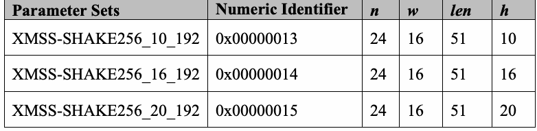
| パラメーターセット | 数値識別子 | n | w | len | h |
| XMSS-SHAKE256_10_192 | 0x00000013 | 24 | 16 | 51 | 10 |
| XMSS-SHAKE256_16_192 | 0x00000014 | 24 | 16 | 51 | 16 |
| XMSS-SHAKE256_20_192 | 0x00000015 | 24 | 16 | 51 | 20 |
Table 17: XMSSMT parameter sets for SHAKE256/192
表17：SHAKE256/192用XMSSMTパラメーターセット
未レビュー訳| Parameter Sets | Numeric Identifier | n | w | len | h | d |
| XMSSMT-SHAKE256_20/2_192 | 0x00000031 | 24 | 16 | 51 | 20 | 2 |
| XMSSMT-SHAKE256_20/4_192 | 0x00000032 | 24 | 16 | 51 | 20 | 4 |
| XMSSMT-SHAKE256_40/2_192 | 0x00000033 | 24 | 16 | 51 | 40 | 2 |
| XMSSMT-SHAKE256_40/4_192 | 0x00000034 | 24 | 16 | 51 | 40 | 4 |
| XMSSMT-SHAKE256_40/8_192 | 0x00000035 | 24 | 16 | 51 | 40 | 8 |
| XMSSMT-SHAKE256_60/3_192 | 0x00000036 | 24 | 16 | 51 | 60 | 3 |
| XMSSMT-SHAKE256_60/6_192 | 0x00000037 | 24 | 16 | 51 | 60 | 6 |
| XMSSMT-SHAKE256_60/12_192 | 0x00000038 | 24 | 16 | 51 | 60 | 12 |
原本PDFの抜粋画像
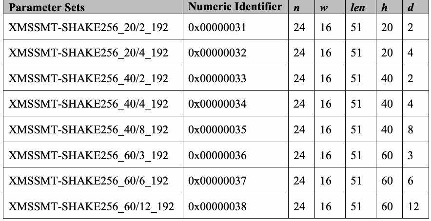
| パラメーターセット | 数値識別子 | n | w | len | h | d |
| XMSSMT-SHAKE256_20/2_192 | 0x00000031 | 24 | 16 | 51 | 20 | 2 |
| XMSSMT-SHAKE256_20/4_192 | 0x00000032 | 24 | 16 | 51 | 20 | 4 |
| XMSSMT-SHAKE256_40/2_192 | 0x00000033 | 24 | 16 | 51 | 40 | 2 |
| XMSSMT-SHAKE256_40/4_192 | 0x00000034 | 24 | 16 | 51 | 40 | 4 |
| XMSSMT-SHAKE256_40/8_192 | 0x00000035 | 24 | 16 | 51 | 40 | 8 |
| XMSSMT-SHAKE256_60/3_192 | 0x00000036 | 24 | 16 | 51 | 60 | 3 |
| XMSSMT-SHAKE256_60/6_192 | 0x00000037 | 24 | 16 | 51 | 60 | 6 |
| XMSSMT-SHAKE256_60/12_192 | 0x00000038 | 24 | 16 | 51 | 60 | 12 |
For the parameter sets in this section, the functions F, H, H_msg, PRF, and PRF are defined
この節のパラメーターセットでは、関数F、H、H_msg、PRF、およびPRF_keygenを次のように定義する。
未レビュー訳keygen
原文のみ
as follows:
原文のみ
•F(KEY, M): SHAKE256(toByte(0, 4) || KEY || M, 192)
•F(KEY, M)：SHAKE256(toByte(0, 4) || KEY || M, 192)
•H(KEY, M): SHAKE256(toByte(1, 4) || KEY || M, 192)
•H(KEY, M)：SHAKE256(toByte(1, 4) || KEY || M, 192)
•H_msg(KEY, M): SHAKE256(toByte(2, 4) || KEY || M, 192)
•H_msg(KEY, M)：SHAKE256(toByte(2, 4) || KEY || M, 192)
•PRF(KEY, M): SHAKE256(toByte(3, 4) || KEY || M, 192)
•PRF(KEY, M)：SHAKE256(toByte(3, 4) || KEY || M, 192)
•PRF (KEY, M): SHAKE256(toByte(4, 4) || KEY || M, 192) keygen
•PRF_keygen(KEY, M)：SHAKE256(toByte(4, 4) || KEY || M, 192)
未レビュー訳6 Random Number Generation for Keys and Signatures
6 鍵と署名のための乱数生成
未レビュー訳This section specifies requirements for the generation of random data that apply in addition to the requirements that are specified in [2] for LMS and HSS and in [1] for XMSS and XMSSMT.
本節では、LMSおよびHSSについて[2]が、XMSSおよびXMSSMTについて[1]が規定する要件に加えて適用される、乱数データ生成の要件を定める。
未レビュー訳Note: Variables and notations used in this section are defined in the relevant documents mentioned above.
注：本節で用いる変数および表記は、上記の関連文書で定義されている。
6.1 LMS and HSS Random Number Generation Requirements
6.1 LMSおよびHSSの乱数生成要件
The LMS key pair identifier, I, shall be generated using an approved random bit generator (see the SP 800-90 series of publications [6]), where the instantiation of the random bit generator supports at least 128 bits of security strength.
LMS鍵ペア識別子Iは、承認された乱数ビット生成器（SP 800-90シリーズ[6]参照）を用いて生成しなければならない。その乱数ビット生成器のインスタンス化は、少なくとも128ビットのセキュリティ強度をサポートしなければならない。
The n-byte private elements of the LM-OTS private keys (x[i] in Section 4.2 of [2]) shall be generated using the pseudorandom key generation method specified in Appendix A of [2]. The same SEED value shall be used to generate every private element in a single LMS instance, and SEED shall be generated using an approved random bit generator [6], where the instantiation of the random bit generator supports at least 8n bits of security strength.
LM-OTS秘密鍵のnバイトの秘密要素（[2]の4.2節にあるx[i]）は、[2]の付録Aで規定される擬似乱数鍵生成法を用いて生成しなければならない。1つのLMSインスタンス内のすべての秘密要素の生成には同じSEED値を用いなければならない。SEEDは承認された乱数ビット生成器[6]を用いて生成し、そのインスタンス化は少なくとも8nビットのセキュリティ強度をサポートしなければならない。
If more than one LMS instance is being created (e.g., for an HSS instance), then a separate key pair identifier, I, and SEED shall be generated for each LMS instance.
複数のLMSインスタンスを作成する場合（たとえばHSSインスタンスの場合）、LMSインスタンスごとに別々の鍵ペア識別子IとSEEDを生成しなければならない。
未レビュー訳When generating a signature, the n-byte randomizer C (see Section 4.5 of [2]) shall be generated using an approved random bit generator [6], where the instantiation of the random bit generator supports at least 8n bits of security strength.
署名を生成する際、nバイトのランダマイザーC（[2]の4.5節参照）は、承認された乱数ビット生成器[6]を用いて生成しなければならない。そのインスタンス化は少なくとも8nビットのセキュリティ強度をサポートしなければならない。
6.2 XMSS and XMSSMT Random Number Generation Requirements
6.2 XMSSおよびXMSSMTの乱数生成要件
未レビュー訳The n-byte values SK_PRF and SEED shall be generated using an approved random bit generator (see the SP 800-90 series of publications [6]), where the instantiation of the random bit generator supports at least 8n bits of security strength.
nバイトの値SK_PRFおよびSEEDは、承認された乱数ビット生成器（SP 800-90シリーズ[6]参照）を用いて生成しなければならない。そのインスタンス化は少なくとも8nビットのセキュリティ強度をサポートしなければならない。
The private n-byte strings in the WOTS+ private keys (sk[i] in Section 3.1.3 of [1]) shall be generated using the pseudorandom key generation method specified in Algorithm 10' in Section 7.2.1: sk[j] = PRF (S_XMSS, SEED || ADRS), where PRF is as defined in Section 5 for
WOTS+秘密鍵のnバイトの秘密文字列（[1]の3.1.3節にあるsk[i]）は、7.2.1節のアルゴリズム10′に規定される擬似乱数鍵生成法で生成しなければならない。sk[j] = PRF_keygen(S_XMSS, SEED || ADRS) とする。
未レビュー訳keygen
原文のみ
keygen
原文のみ
the parameter set being used.6 The private seed, S_XMSS, shall be generated using an approved random bit generator [6], where the instantiation of the random bit generator supports at least 8n bits of security strength. If more than one XMSS key pair is being created within a cryptographic module (including XMSS keys that belong to a single XMSSMT instance), then a separate random S_XMSS shall be generated for each XMSS key pair.
PRF_keygenは、使用するパラメーターセットについて5節で定義される。秘密シードS_XMSSは、承認された乱数ビット生成器[6]を用いて生成し、そのインスタンス化は少なくとも8nビットのセキュリティ強度をサポートしなければならない。1つの暗号モジュール内で複数のXMSS鍵ペア（単一のXMSSMTインスタンスに属するXMSS鍵を含む）を作成する場合、鍵ペアごとに別のランダムなS_XMSSを生成しなければならない。
未レビュー訳7 Distributed Multi-Tree Hash-Based Signatures
7 分散型マルチツリー・ハッシュベース署名
未レビュー訳If a digital signature key will be used to generate signatures over a long period of time and replacing the public key would be difficult, then it will be necessary to prepare for the possibility that a cryptographic module holding the private key may fail during the key’s lifetime. In the case of most digital signature schemes, a common solution is to make copies of the private key. However, in the case of stateful HBS schemes, simply copying the private key would create a risk of OTS key reuse.
デジタル署名鍵を長期間にわたり署名生成に使用し、公開鍵の置換が難しい場合、鍵の使用期間中に秘密鍵を保持する暗号モジュールが故障する可能性に備える必要がある。多くのデジタル署名方式では、秘密鍵の複製を作ることが一般的な解決策である。しかし、状態を持つHBS方式では、秘密鍵を単純に複製するとOTS鍵を再利用する危険が生じる。
While it would be possible to have one cryptographic module generate all of the OTS keys and then distribute different OTS keys to each of the other cryptographic modules, doing so is not an option for cryptographic modules that conform to this recommendation: due to the risks associated with copying OTS keys, this recommendation prohibits exporting private keying material (Section 8).
1つの暗号モジュールですべてのOTS鍵を生成し、他の暗号モジュールに異なるOTS鍵を配布することも可能ではある。しかし、本勧告に適合する暗号モジュールでは選択肢にならない。OTS鍵の複製に伴う危険のため、本勧告は秘密鍵素材のエクスポートを禁止している（8節）。
One option would be to create multiple stateful HBS keys on different cryptographic modules and then configure clients to accept signatures created using any of these keys. These keys could be distributed to clients all at once or using a mechanism such as the Hash Of Root Key certificate extension [23], which provides a mechanism for distributing new public keys over time.
別の方法として、異なる暗号モジュールで複数の状態を持つHBS鍵を作成し、いずれかの鍵で生成された署名をクライアントが受け入れるよう設定できる。これらの鍵は一括でクライアントに配布してもよく、Hash Of Root Key証明書拡張[23]などの仕組みを使って、新しい公開鍵を時間をかけて配布してもよい。
未レビュー訳Another option would be to create a single stateful HBS key in which the OTS private keys are distributed across multiple cryptographic modules. The easiest way to have OTS keys on multiple cryptographic modules without exporting private keys is to use HSS or XMSSMT with two levels of trees where the trees are instantiated on different cryptographic modules. First, a top-level LMS or XMSS key pair would be created in a cryptographic module. The top level’s OTS keys would only be used to sign the roots of other trees. Then, bottom-level LMS or XMSS key pairs would be created, and the public keys from those key pairs (i.e., the roots of their Merkle trees) would be signed by OTS keys of the top-level key pair. The OTS keys of the bottom-level key pairs would be used to sign ordinary messages. The number of bottom-level key pairs that could be created would be limited only by the number of OTS keys in the top-level key pair.
もう1つの方法は、1つの状態を持つHBS鍵を作成し、そのOTS秘密鍵を複数の暗号モジュールに分散することである。秘密鍵をエクスポートせずに複数の暗号モジュールにOTS鍵を持たせる最も簡単な方法は、HSSまたはXMSSMTの2階層木を用い、各階層の木を別々の暗号モジュールにインスタンス化することである。まず、最上位のLMSまたはXMSS鍵ペアを暗号モジュール内で作成する。最上位のOTS鍵は、他の木の根への署名にのみ使用する。次に、下位のLMSまたはXMSS鍵ペアを作成し、それらの公開鍵（すなわちMerkle木の根）に最上位鍵ペアのOTS鍵で署名する。下位鍵ペアのOTS鍵は通常のメッセージ署名に使う。作成できる下位鍵ペアの数は、最上位鍵ペアのOTS鍵の数だけに制限される。
未レビュー訳As an example, suppose that an organization wishes to have a single XMSSMT key with the OTS private keys being distributed across two cryptographic modules (in case one fails), and the organization has determined that, at most, 10 000 signatures will need to be generated over the lifetime of the XMSSMT key. The organization could create a top-level XMSS key pair in one cryptographic module using the XMSSMT-SHA2_20/2_256 parameter set and then create 10 bottom-level XMSS keys in that same cryptographic module. An additional 10 bottom-level XMSS keys could be created in a second cryptographic module with all 20 of the bottom-level’s keys being signed by OTS keys of the top-level key pair.
例として、組織が1つのXMSSMT鍵を使い、そのOTS秘密鍵を（片方の暗号モジュールが故障した場合に備えて）2つの暗号モジュールに分散したいとする。また、そのXMSSMT鍵の使用期間中に生成する署名は最大10,000件と見積もっているとする。この場合、1つ目の暗号モジュールでXMSSMT-SHA2_20/2_256パラメーターセットを使って最上位XMSS鍵ペアを作成し、同じモジュール内で下位XMSS鍵を10個作成できる。さらに、2つ目の暗号モジュールでも下位XMSS鍵を10個作成できる。合計20個すべての下位鍵の署名には、最上位鍵ペアのOTS鍵を使う。
未レビュー訳When working with distributed multi-tree hash-based signatures, the cryptographic module that holds the top-level tree is a potential single point of failure. Once this cryptographic module fails, it is no longer possible to sign additional bottom-level key pairs. Consequently, all of the bottom-level keys should be generated up front as part of the initial key generation ceremony. Once the top-level key has been used to sign all of the bottom-level keys, the top-level key is no longer needed, as copies of the signatures created using OTS keys of the top-level key pair may be stored outside of the cryptographic module.
分散型マルチツリー・ハッシュベース署名を用いる場合、最上位の木を保持する暗号モジュールが単一障害点となる可能性がある。この暗号モジュールが故障すると、それ以上、下位鍵ペアに署名できなくなる。そのため、初回の鍵生成セレモニーの一環として、すべての下位鍵をあらかじめ生成しておくべきである。最上位鍵ですべての下位鍵に署名した後は最上位鍵が不要になるため、最上位鍵ペアのOTS鍵で作成した署名のコピーを暗号モジュールの外部に保管できる。
未レビュー訳In order to avoid the top-level key being a single point of failure, the two options described above could be combined to create multiple distributed multi-tree HBS keys. Multiple top-level keys pairs would initially be created, each on a different cryptographic module, and clients would be configured to accept signatures created using any of these keys. Then, whenever a new bottom-level key needed to be created, it could be signed by any one of the top-level keys. This would allow for new bottom-level keys to be created as long as at least one of the cryptographic modules that contains a top-level key remained operational. Of course, the same level of care should be used when signing a bottom-level key as would be used during the initial key generation ceremony (or as would be used in making a copy of an RSA or ECDSA private key).
最上位鍵が単一障害点となるのを避けるには、前述した2つの方法を組み合わせ、分散型マルチツリーHBS鍵を複数作成できる。最初に、異なる暗号モジュールごとに最上位鍵ペアを作成し、いずれかの鍵で生成された署名を受け入れるようクライアントを設定する。その後、新しい下位鍵が必要になるたびに、いずれかの最上位鍵で署名できる。これにより、少なくとも1つの最上位鍵を保持する暗号モジュールが稼働している限り、新しい下位鍵を作成できる。もちろん、下位鍵に署名する際も、初回の鍵生成セレモニーやRSAまたはECDSA秘密鍵の複製を作成する際と同程度の注意を払うべきである。
未レビュー訳7.1 HSS
7.1 HSS
In the case of HSS, the distributed multi-tree scheme described above can be implemented using multiple cryptographic modules that individually implement LMS without modifications. The top-level LMS public key can be converted to an HSS public key by an external, non-cryptographic device. This device can also submit the public keys of the bottom-level LMS keys for signature by the top-level LMS key. In HSS, the operation for signing the root of a lower-level tree is the same as the operation for signing an ordinary message. Finally, this external device can submit ordinary messages to cryptographic modules that hold the bottom-level LMS keys for signing and then combine the resulting LMS signatures with the top-level key’s signature on the bottom-level LMS public key in order to create the HSS signature for the ordinary messages (see Algorithm 7 and Algorithm 8 in [2]).
HSSでは、前述の分散型マルチツリー方式を、個別にLMSを実装する複数の暗号モジュールを変更せずに用いて実装できる。外部の非暗号デバイスが、最上位LMS公開鍵をHSS公開鍵に変換できる。このデバイスは、下位LMS鍵の公開鍵を最上位LMS鍵で署名するように依頼することもできる。HSSでは、下位木の根に署名する操作は通常のメッセージに署名する操作と同じである。最後に、この外部デバイスは、下位LMS鍵を保持する暗号モジュールに通常のメッセージの署名を依頼し、得られたLMS署名を、下位LMS公開鍵に対する最上位鍵の署名と組み合わせて、通常のメッセージに対するHSS署名を作成できる（[2]のアルゴリズム7および8参照）。
未レビュー訳7.2 XMSSMT
7.2 XMSSMT
未レビュー訳Distributing the implementation of an XMSSMT instance across multiple cryptographic modules requires each cryptographic module to implement slightly modified versions of the XMSS key and signature generation algorithms provided in [1]. The modified versions of these algorithms are provided in Section 7.2.1. The modifications are primarily intended to ensure that each XMSS key uses the appropriate values for its layer and tree addresses when computing prefixes and bitmasks. The modifications also ensure that every XMSS key uses the same value for SEED and that the root of the top-level tree is used when computing the hashes of messages to be signed.
XMSSMTインスタンスを複数の暗号モジュールに分散して実装するには、各モジュールで[1]に示されるXMSSの鍵生成および署名生成アルゴリズムの修正版を実装する必要がある。修正版は7.2.1節に示す。主な変更点は、接頭辞とビットマスクを計算する際に、各XMSS鍵が階層と木のアドレスに応じた値を使用するようにすることである。また、すべてのXMSS鍵が同一のSEED値を使うようにし、署名対象メッセージのハッシュ計算では最上位の木の根を使う。
未レビュー訳Note that while Algorithm 15 in [1] indicates that an XMSSMT secret key has a single SK_PRF value that is shared by all of the XMSS secret keys, Algorithm 10' in Section 7.2.1 has each cryptographic module generate its own value for SK_PRF. While generating a different SK_PRF for each cryptographic module does not exactly align with the specification in [1], doing so does not affect either interoperability or security. SK_PRF is only used to pseudorandomly generate the value r in Algorithm 16, which is used for randomized hashing, and any secure method for generating random values could be used to generate r.
[1]のアルゴリズム15では、XMSSMT秘密鍵はすべてのXMSS秘密鍵で共有する単一のSK_PRF値を持つとされている。一方、7.2.1節のアルゴリズム10′では、各暗号モジュールがそれぞれ独自のSK_PRF値を生成する。暗号モジュールごとに異なるSK_PRFを生成する方法は[1]の仕様に厳密には一致しないが、相互運用性にも安全性にも影響しない。SK_PRFは、ランダム化ハッシュに使うアルゴリズム16の値rを擬似乱数で生成するためだけに使われるため、rの生成には安全な乱数生成方法であればどれを用いてもよい。
未レビュー訳Section 7.2.2 describes the steps that an external, non-cryptographic device needs to perform in order to implement XMSSMT key and signature generation using a set of cryptographic modules that implement the algorithms in Section 7.2.1. While Algorithms 10' and 12' in Section 7.2.1 have been designed to work with XMSSMT instances that have more than two layers, the algorithms in Section 7.2.2 assume that an XMSSMT instance with exactly two layers is being created.
7.2.2節では、7.2.1節のアルゴリズムを実装する複数の暗号モジュールを使ってXMSSMTの鍵生成と署名生成を実装するため、外部の非暗号デバイスが行う手順を説明する。7.2.1節のアルゴリズム10′および12′は2階層を超えるXMSSMTインスタンスでも使えるよう設計されているが、7.2.2節のアルゴリズムは、ちょうど2階層のXMSSMTインスタンスを作成することを前提としている。
未レビュー訳7.2.1 Modified XMSS Key Generation and Signature Algorithms
7.2.1 修正XMSS鍵生成および署名アルゴリズム
Algorithm 10': XMSS'_keyGen
アルゴリズム10′：XMSS′_keyGen
未レビュー訳// L needs to be in the range [0 … d-1] // t needs to be in the range [0 … 2^((d-1-L)(h/d)) - 1] Input: level L, tree t, public key of top-level tree PK_MT (if L d - 1) Output: XMSS public key PK
// L は [0 … d−1] の範囲でなければならない // t は [0 … 2^((d−1−L)(h/d)) − 1] の範囲でなければならない 入力：レベルL、木t、最上位木の公開鍵PK_MT（L ≠ d−1の場合） 出力：XMSS公開鍵PK
未レビュー訳原文のみ
Initialize S_XMSS with an n-byte string using an approved random bit generator [6], where the instantiation of the random bit generator supports at least 8n bits of security strength;
S_XMSSをnバイト文字列で初期化する。承認された乱数ビット生成器[6]を用い、そのインスタンス化は少なくとも8nビットのセキュリティ強度をサポートしなければならない。
未レビュー訳// SEED needs to be generated for the top-level XMSS key. // For all other XMSS keys, the value needs to be copied from // the top-level XMSS key. if ( L = d – 1 ) { Initialize SEED with an n-byte string using an approved random bit generator [6], where the instantiation of the random bit generator supports at least 8n bits of security strength; } else { SEED = getSEED(PK_MT); } setSEED(SK, SEED);
// 最上位XMSS鍵のSEEDは新たに生成する。// 他のXMSS鍵では、最上位XMSS鍵の値をコピーする。if (L = d − 1) { SEEDをnバイト文字列で初期化する。承認された乱数ビット生成器[6]を用い、そのインスタンス化は少なくとも8nビットのセキュリティ強度をサポートしなければならない。} else { SEED = getSEED(PK_MT); } setSEED(SK, SEED);
未レビュー訳ADRS = toByte(0, 32); ADRS.setLayerAddress(L); ADRS.setTreeAddress(t);
ADRS = toByte(0, 32); ADRS.setLayerAddress(L); ADRS.setTreeAddress(t);
未レビュー訳// Initialization for SK-specific contents idx = t * 2^(h / d); for ( i = 0; i < 2^(h / d); i++ ) { ADRS.setOTSAddress(i); // For each OTS key, i, generate the private key value for // chain in the OTS key. for ( j=0; j < len; j++) {
// SK固有の内容を初期化 idx = t * 2^(h / d); for (i = 0; i < 2^(h / d); i++) { ADRS.setOTSAddress(i); // 各OTS鍵iについて、その鍵のチェーン用秘密鍵値を生成する。for (j = 0; j < len; j++) {
未レビュー訳ADRS.setChainAddress(j);
ADRS.setChainAddress(j);
未レビュー訳PRF
原文のみ
sk[j] = keygen(S_XMSS, SEED || ADRS); } // Set the secret key for OTS key i to the array of len // private key values generated for that key. wots_sk[i] = sk; } setWOTS_SK(SK, wots_sk);
sk[j] = PRF_keygen(S_XMSS, SEED || ADRS); } // OTS鍵iの秘密鍵を、その鍵用に生成したlen個の秘密鍵値の配列に設定する。wots_sk[i] = sk; } setWOTS_SK(SK, wots_sk);
未レビュー訳Initialize SK_PRF with an n-byte string using an approved random bit generator [6], where the instantiation of the random bit generator supports at least 8n bits of security strength; setSK_PRF(SK, SK_PRF);
SK_PRFをnバイト文字列で初期化する。承認された乱数ビット生成器[6]を用い、そのインスタンス化は少なくとも8nビットのセキュリティ強度をサポートしなければならない。setSK_PRF(SK, SK_PRF);
未レビュー訳root = treeHash(SK, 0, h / d, ADRS);
root = treeHash(SK, 0, h / d, ADRS);
未レビュー訳setLayerAddress(SK, L); setTreeAddress(SK, t); setIdx(SK, idx);
setLayerAddress(SK, L); setTreeAddress(SK, t); setIdx(SK, idx);
未レビュー訳// The "root" value in SK needs to be the root of the top-level // XMSS tree, as this is the value used when hashing the message // to be signed. if ( L = d – 1 ) { setRoot(SK, root); SK = L || t || idx || wots_sk || SK_PRF || root || SEED; } else { setRoot(SK, getRoot(PK_MT)); SK = L || t || idx || wots_sk || SK_PRF || getRoot(PK_MT) || SEED; } // The public key should be encoded using the XDR for // xmssmt_public_key in Appendix C.3 of [1] with the additions // specified in Appendix B.3 of this document. PK = OID || root || SEED; return PK;
// SK内の「root」値は最上位XMSS木の根とする。署名対象メッセージをハッシュするときにこの値を使う。if (L = d − 1) { setRoot(SK, root); SK = L || t || idx || wots_sk || SK_PRF || root || SEED; } else { setRoot(SK, getRoot(PK_MT)); SK = L || t || idx || wots_sk || SK_PRF || getRoot(PK_MT) || SEED; } // 公開鍵は、[1]の付録C.3にあるxmssmt_public_key用XDRに、本書の付録B.3で規定する追加内容を加えて符号化する。PK = OID || root || SEED; return PK;
未レビュー訳Algorithm 12': XMSS'_sign
アルゴリズム12′：XMSS′_sign
未レビュー訳Input: Message M Output: signature Sig
入力：メッセージM 出力：署名Sig
未レビュー訳idx_sig = getIdx(SK); setIdx(SK, idx_sig + 1); L = getLayerAddress(SK); t = getTreeAddress(SK); ADRS = toByte(0, 32); ADRS.setLayerAddress(L); ADRS.setTreeAddress(t);
idx_sig = getIdx(SK); setIdx(SK, idx_sig + 1); L = getLayerAddress(SK); t = getTreeAddress(SK); ADRS = toByte(0, 32); ADRS.setLayerAddress(L); ADRS.setTreeAddress(t);
未レビュー訳if ( L > 0 ) { // M must be the n-byte root from an XMSS public key byte[n] r = 0; // n-byte string of zeros byte[n] M' = M; } else { byte[n] r = PRF(getSK_PRF(SK), toByte(idx_sig, 32)); byte[n] M' = H_msg(r || getRoot(SK) || (toByte(idx_sig, n)), M); } idx_leaf = idx_sig - t * 2^(h / d); Sig = idx_sig || r || treeSig(M', SK, idx_leaf, ADRS); return Sig;
if (L > 0) { // MはXMSS公開鍵から得られるnバイトの根でなければならない。byte[n] r = 0; // nバイトのゼロ文字列 byte[n] M′ = M; } else { byte[n] r = PRF(getSK_PRF(SK), toByte(idx_sig, 32)); byte[n] M′ = H_msg(r || getRoot(SK) || (toByte(idx_sig, n)), M); } idx_leaf = idx_sig − t * 2^(h / d); Sig = idx_sig || r || treeSig(M′, SK, idx_leaf, ADRS); return Sig;
未レビュー訳7.2.2 XMSSMT External Device Operations
7.2.2 XMSSMT外部デバイスの操作
未レビュー訳XMSS^MT external device keygen
XMSSMT外部デバイスによる鍵生成
未レビュー訳Input: No input
入力：なし
未レビュー訳// Generate top-level key pair on a cryptographic module PK_MT = XMSS'_keyGen(1, 0, NULL);
// 暗号モジュールで最上位鍵ペアを生成する PK_MT = XMSS′_keyGen(1, 0, NULL);
未レビュー訳t = 0; for each bottom-level key pair to be created { // Generate bottom-level key pair on a cryptographic module PK[t] = XMSS’_keygen(0, t, PK_MT);
t = 0; 作成する下位鍵ペアごとに繰り返す { // 暗号モジュールで下位鍵ペアを生成する PK[t] = XMSS′_keygen(0, t, PK_MT);
未レビュー訳// Submit root of bottom-level key pair’s public key // to be signed by the top-level key pair. SigPK[t] = XMSS'_sign(getRoot(PK[t]));
// 下位鍵ペアの公開鍵の根を最上位鍵ペアで署名するよう送信する SigPK[t] = XMSS′_sign(getRoot(PK[t]));
未レビュー訳// If the public key on the bottom-level tree was created using // a tree address of t, then its root needs to be signed by OTS
// 下位木の公開鍵を木アドレスtで作成した場合、その根には最上位木のOTS鍵で署名する必要がある。
未レビュー訳原文のみ
// key t of the top-level tree. If it was not, then try again. while ( getIdx(SigPK[t]) t ) { t = getIdx(SigPK[t]) + 1;
// その鍵は、最上位木のOTS鍵tでなければならない。そうでなければ再試行する。while (getIdx(SigPK[t]) ≠ t) { t = getIdx(SigPK[t]) + 1;
未レビュー訳原文のみ
PK[t] = XMSS'_keygen(0, t, PK_MT); SigPK[t] = XMSS'_sign(getRoot(PK[t])); } t = t + 1;
PK[t] = XMSS′_keygen(0, t, PK_MT); SigPK[t] = XMSS′_sign(getRoot(PK[t])); } t = t + 1;
未レビュー訳}
未レビュー訳XMSS^MT external device sign
XMSSMT外部デバイスによる署名
未レビュー訳Input: Message M
入力：メッセージM
未レビュー訳Output: signature Sig
出力：署名Sig
未レビュー訳// Send XMSS'_sign() command to one of the bottom-level key pairs Sig_tmp = XMSS'_sign(M);
// 下位鍵ペアのいずれかにXMSS′_sign()コマンドを送る Sig_tmp = XMSS′_sign(M);
未レビュー訳idx_sig = getIdx(Sig_tmp);
idx_sig = getIdx(Sig_tmp);
未レビュー訳// Determine which bottom-level tree was used to sign the message // by extracting the most significant bits of idx_sig. t = [idx_sig – (idx_sig mod 2^(h / d))]/ 2^(h / d));
// idx_sigの最上位ビットを取り出して、メッセージ署名に使った下位木を特定する。t = [idx_sig − (idx_sig mod 2^(h / d))] / 2^(h / d);
未レビュー訳// Append the signature of the signing key pair's root // (just the output of treeSig, not idx_sig or r). Sig = Sig_tmp || getSig(SigPK[t]); return Sig;
// 署名した鍵ペアの根に対する署名を追加する（idx_sigやrではなく、treeSigの出力のみ）。Sig = Sig_tmp || getSig(SigPK[t]); return Sig;
未レビュー訳8 Conformance
8 適合性
未レビュー訳8.1 Key Generation and Signature Generation
8.1 鍵生成および署名生成
Cryptographic modules that implement signature generation for a parameter set shall also implement key generation for that parameter set. Implementations of the key generation and signature algorithms in this document shall only be validated for use within hardware cryptographic modules. The cryptographic modules shall be validated to provide FIPS 140-2 or FIPS 140-3 [19] Level 3 or higher physical security, and the operational environment shall be non-modifiable or limited.8 In addition, a cryptographic module that implements the key generation or signature algorithms shall only operate in an approved mode of operation and shall not implement a bypass mode. The cryptographic module shall not allow for the export of private keying material. The entropy source for any approved random bit generator [6] used in the implementation shall be located inside the cryptographic module’s physical boundary.
あるパラメーターセットの署名生成を実装する暗号モジュールは、そのパラメーターセットの鍵生成も実装しなければならない。本書に定める鍵生成および署名アルゴリズムの実装は、ハードウェア暗号モジュール内での使用に対してのみ検証されなければならない。暗号モジュールはFIPS 140-2またはFIPS 140-3[19]のレベル3以上の物理的セキュリティを提供するものとして検証されなければならず、運用環境は変更不能または制限付きでなければならない。⁸ さらに、鍵生成または署名アルゴリズムを実装する暗号モジュールは承認された運用モードでのみ動作し、バイパスモードを実装してはならない。暗号モジュールは秘密鍵素材をエクスポートできてはならない。実装で使用する承認済み乱数ビット生成器[6]のエントロピー源は、暗号モジュールの物理的境界内に配置しなければならない。
未レビュー訳In order to prevent the possible reuse of an OTS key, when the cryptographic module accepts a request to sign a message, the cryptographic module shall increment the leaf index of the private key (q in LMS, idx in XMSS, idx_sig in XMSSMT) and shall store the incremented leaf index value in nonvolatile storage before exporting a signature value or accepting another request to sign a message. The cryptographic module shall not use an OTS key to generate a digital signature more than one time.9
OTS鍵の再利用を防ぐため、暗号モジュールがメッセージ署名要求を受け付けたとき、秘密鍵のリーフインデックス（LMSではq、XMSSではidx、XMSSMTではidx_sig）をインクリメントし、署名値をエクスポートする前、または別の署名要求を受け付ける前に、インクリメント後のリーフインデックス値を不揮発性ストレージに保存しなければならない。暗号モジュールはOTS鍵をデジタル署名の生成に2回以上使用してはならない。⁹
未レビュー訳Cryptographic modules that implement LMS key and signature generation shall support at least one of the LM-OTS parameter sets in Section 4. For each LM-OTS parameter set supported by a cryptographic module, the cryptographic module shall support at least one LMS parameter set from Section 4 that uses the same hash function as the LM-OTS parameter set. Cryptographic modules that implement LMS key and signature generation shall generate random data in accordance with Section 6.1.
LMSの鍵生成および署名生成を実装する暗号モジュールは、4節のLM-OTSパラメーターセットを少なくとも1つサポートしなければならない。暗号モジュールがサポートする各LM-OTSパラメーターセットについて、同じハッシュ関数を用いる4節のLMSパラメーターセットを少なくとも1つサポートしなければならない。LMSの鍵生成および署名生成を実装する暗号モジュールは、6.1節に従って乱数データを生成しなければならない。
未レビュー訳Cryptographic modules that implement XMSS key and signature generation shall implement Algorithm 10 and Algorithm 12 from [1] for at least one of the XMSS parameter sets in Section
XMSSの鍵生成および署名生成を実装する暗号モジュールは、少なくとも1つの5節のXMSSパラメーターセットについて、[1]のアルゴリズム10およびアルゴリズム12を実装しなければならない。
未レビュー訳5.(The WOTS+ key generation method specified in Algorithm 10' in Section 7.2.1 shall be used.) Cryptographic modules that support implementation of XMSSMT key and signature generation shall implement Algorithm 10' and Algorithm 12' from Section 7.2.1 of this document for at least one of the XMSSMT parameter sets in Section 5. Cryptographic modules that implement XMSS or XMSSMT key and signature generation shall generate random data in accordance with Section 6.2.
5.（7.2.1節のアルゴリズム10′に規定されるWOTS+鍵生成法を使用する。）XMSSMTの鍵生成および署名生成を実装する暗号モジュールは、本書の7.2.1節にあるアルゴリズム10′およびアルゴリズム12′を、5節のXMSSMTパラメーターセットの少なくとも1つについて実装しなければならない。XMSSまたはXMSSMTの鍵生成および署名生成を実装する暗号モジュールは、6.2節に従って乱数データを生成しなければならない。
未レビュー訳8.2 Signature Verification
8.2 署名検証
Cryptographic modules that implement LMS signature verification shall support at least one of the LM-OTS parameter sets in Section 4. For each LM-OTS parameter set supported by a cryptographic module, the cryptographic module shall support at least one LMS parameter set from Section 4 that uses the same hash function as the LM-OTS parameter set.
LMS署名検証を実装する暗号モジュールは、4節のLM-OTSパラメーターセットを少なくとも1つサポートしなければならない。暗号モジュールがサポートする各LM-OTSパラメーターセットについて、同じハッシュ関数を用いる4節のLMSパラメーターセットを少なくとも1つサポートしなければならない。
未レビュー訳Cryptographic modules that implement XMSS signature verification shall implement Algorithm 14 of [1] for at least one of the parameter sets in Section 5. Cryptographic modules that implement XMSSMT signature verification shall implement Algorithm 17 of [1] for at least one of the parameter sets in Section 5.
XMSS署名検証を実装する暗号モジュールは、5節のパラメーターセットの少なくとも1つについて、[1]のアルゴリズム14を実装しなければならない。XMSSMT署名検証を実装する暗号モジュールは、5節のパラメーターセットの少なくとも1つについて、[1]のアルゴリズム17を実装しなければならない。
未レビュー訳9 Security Considerations
9 セキュリティ上の考慮事項
未レビュー訳9.1 One-Time Signature Key Reuse
9.1 ワンタイム署名鍵の再利用
Both LMS and XMSS are stateful signature schemes. If an attacker were able to obtain signatures for two different messages created using the same one-time signature (OTS) key, then it would become computationally feasible for that attacker to create forgeries [13]. As noted in [8], extreme care needs to be taken in order to avoid the risk that an OTS key will be reused accidentally. While the conformance requirements in Section 8.1 prevent many of the actions that could result in accidental OTS key reuse, cryptographic modules still need to be carefully designed to ensure that unexpected behavior cannot result in an OTS key being reused.
LMSとXMSSはいずれも状態を持つ署名方式である。攻撃者が同じワンタイム署名（OTS）鍵を使って作成された異なる2つのメッセージへの署名を入手すると、偽造署名を作成できる計算能力が得られる[13]。[8]で指摘されているように、OTS鍵が誤って再利用される危険を避けるには、細心の注意が必要である。8.1節の適合性要件により、OTS鍵の偶発的な再利用につながる多くの操作は防げるが、予期しない動作でOTS鍵が再利用されないよう、暗号モジュールを慎重に設計する必要がある。
未レビュー訳In order to avoid reuse of an OTS key, the state of the private key must be updated each time a signature is generated. If the private key is stored in non-volatile memory, then the state of the key must be updated in the nonvolatile memory to mark an OTS key as unavailable before the corresponding signature that was generated using the OTS key is exported. Depending on the environment, this can be nontrivial to implement. With many operating systems, simply writing the update to a file is not sufficient because the write operation will be cached with the actual write to non-volatile memory occurring later. If the cryptographic module loses power or crashes before the write to non-volatile memory occurs, then the state update will be lost. If a signature were exported after the write operation was issued, but before the update was written to non-volatile memory, there would be a risk that the OTS key would be used again after the cryptographic module restarts.
OTS鍵の再利用を避けるには、署名を生成するたびに秘密鍵の状態を更新しなければならない。秘密鍵を不揮発性メモリに保存する場合、対応する署名値をエクスポートする前に、OTS鍵を使用不可として記録するため、不揮発性メモリ上の鍵状態を更新しなければならない。環境によっては、この実装は容易でない。多くのオペレーティングシステムでは、更新をファイルに書き込むだけでは不十分である。書込み操作がキャッシュされ、実際の不揮発性メモリへの書込みが後になるためである。不揮発性メモリへの書込み前に暗号モジュールの電源が失われるか、クラッシュすると、状態更新が失われる。書込み操作の発行後、更新が不揮発性メモリに書き込まれる前に署名をエクスポートした場合、暗号モジュールの再起動後にOTS鍵が再び使われる危険がある。
未レビュー訳Some hardware cryptographic modules implement monotonic counters, which are guaranteed to increment each time the counter’s value is read. When available, using the current value of a monotonic counter to determine which OTS key to use for a signature may be very helpful in avoiding unintentional reuse of an OTS key.
一部のハードウェア暗号モジュールは単調カウンターを実装しており、その値を読み取るたびに必ず増加することが保証されている。利用できる場合、署名に使うOTS鍵を決めるために単調カウンターの現在値を用いることは、OTS鍵の意図しない再利用を避けるうえで非常に有益となる場合がある。
9.2 Hash Collisions
9.2 ハッシュ衝突
For LMS and XMSS, as for the other approved digital signature schemes [4], the signature generation algorithm is not applied directly to the message but to a message digest generated by the underlying hash function. The security of any signature scheme depends on the inability of an attacker to find distinct messages with the same message digest.
LMSおよびXMSSでは、他の承認済みデジタル署名方式[4]と同様、署名生成アルゴリズムをメッセージに直接適用せず、基礎となるハッシュ関数で生成したメッセージダイジェストに適用する。あらゆる署名方式の安全性は、攻撃者が同じメッセージダイジェストを持つ異なるメッセージを見つけられないことに依存する。
未レビュー訳There are two ways that an attacker might find these distinct messages. The attacker could look for a message that has the same message digest as a message that has already been signed (a second preimage), or the attacker could look for any two messages that have the same message digest (a generic collision) and then try to get the private key holder (i.e., signer) to sign one of them [21]. Finding a second preimage is much more difficult than finding a generic collision, and it would be infeasible for an attacker to find a second preimage with any of the hash functions allowed by this recommendation.
攻撃者が異なるメッセージを見つける方法は2つある。すでに署名されたメッセージと同じメッセージダイジェストを持つメッセージ（第二原像）を探す方法と、同じメッセージダイジェストを持つ任意の2つのメッセージ（一般的な衝突）を探し、その一方に秘密鍵の保有者（署名者）から署名を得ようとする方法である[21]。第二原像を見つけるのは一般的な衝突を見つけるよりはるかに難しく、本勧告で認めるいずれのハッシュ関数でも、攻撃者が第二原像を見つけることは実行不可能である。
未レビュー訳LMS and XMSS both use randomized hashing. When a message is presented to be signed, a random value is created and prepended to the message, and the hash function is applied to this expanded message to produce the message digest. Prepending the random value makes it infeasible for anyone other than the signer to find a generic collision because finding a collision would require predicting the randomizing value. The randomized hashing process does not, however, impact the ability of a signer to create a generic collision since the signer, knowing the private key, can choose the random value to prepend to the message.
LMSとXMSSはいずれもランダム化ハッシュを用いる。署名対象のメッセージが提示されると、ランダム値を生成してメッセージの先頭に付加し、拡張したメッセージにハッシュ関数を適用してメッセージダイジェストを作る。ランダム値を前置することで、署名者以外が一般的な衝突を見つけるにはランダム値を予測する必要があるため、その実行が不可能になる。ただし、ランダム化ハッシュ処理によって署名者が一般的な衝突を作成する能力は損なわれない。署名者は秘密鍵を知っているため、メッセージに前置するランダム値を選べるからである。
未レビュー訳The 192-bit hash functions described in this recommendation, SHA-256/192 and SHAKE256/192, offer significantly less resistance to generic collision searches than their 256-bit counterparts. In particular, a collision of the 192-bit functions may be found as the number of sampled inputs approaches 296, as opposed to 2128 for the 256-bit functions, and it may be possible for a signer with access to an extremely large amount of computing resources to sample 296 inputs.
本勧告で説明する192ビットハッシュ関数SHA-256/192およびSHAKE256/192は、256ビットの対応関数よりも一般的な衝突探索への耐性が大幅に低い。具体的には、192ビット関数では、入力のサンプル数が2⁹⁶に近づくと衝突が見つかる可能性がある。256ビット関数の場合は2¹²⁸に近づくと衝突が見つかる可能性がある。極めて大規模な計算資源を使える署名者であれば、2⁹⁶個の入力をサンプリングできる可能性もある。
未レビュー訳Consequently, one trade-off for the use of 192-bit hash functions in LMS and XMSS is the weakening of the verifier’s assurance that the signer will not be able to change the message once the signature is revealed. This possibility does not affect the formal security properties of the schemes because it remains the case that only the signer could produce a valid signature on a message.
そのため、LMSおよびXMSSで192ビットハッシュ関数を使う際のトレードオフとして、署名が開示された後に署名者がメッセージを変更できないという検証者の確信が弱まる。この可能性は方式の形式的な安全性特性には影響しない。依然として、メッセージに対する有効な署名を作成できるのは署名者だけである。
9.3 Revocation
9.3 失効
Although procedures for the revocation of a compromised key are outside the scope of this publication, the implementation of any signature scheme, in principle, should include such a procedure [22]. For implementations of stateful hash-based signature schemes, which would be vulnerable in the event of OTS key reuse, revocation procedures would arguably be even more important.
侵害された鍵の失効手順は本書の範囲外であるが、原則として、どの署名方式の実装にも失効手順を含めるべきである[22]。OTS鍵の再利用が起きると脆弱になる状態を持つハッシュベース署名方式の実装では、失効手順はさらに重要だと考えられる。
In practice, however, procedures for revocation that are timely, efficient, and robust are often difficult to implement. For applications with the characteristics described in Section 1.1, the difficulties would likely be magnified.
しかし実際には、適時かつ効率的で堅牢な失効手順を実装することは難しい場合が多い。1.1節で説明した特性を持つ用途では、困難さがさらに大きくなると考えられる。
未レビュー訳References
参考文献
未レビュー訳[1]
原文のみ
Huelsing A, Butin D, Gazdag S, Rijneveld J, Mohaisen A (2018) XMSS: eXtended Merkle Signature Scheme. (Internet Research Task Force (IRTF)), IRTF Request for Comments (RFC) 8391. https://doi.org/10.17487/RFC8391
Huelsing A, Butin D, Gazdag S, Rijneveld J, Mohaisen A (2018) XMSS：拡張Merkle署名方式（eXtended Merkle Signature Scheme）。（Internet Research Task Force (IRTF)）、IRTF Request for Comments (RFC) 8391。https://doi.org/10.17487/RFC8391
未レビュー訳[2]
原文のみ
McGrew D, Curcio M, Fluhrer S (2019) Leighton-Micali Hash-Based Signatures. (Internet Research Task Force (IRTF)), IRTF Request for Comments (RFC) 8554. https://doi.org/10.17487/RFC8554
McGrew D, Curcio M, Fluhrer S (2019) Leighton-Micaliハッシュベース署名（Leighton-Micali Hash-Based Signatures）。（Internet Research Task Force (IRTF)）、IRTF Request for Comments (RFC) 8554。https://doi.org/10.17487/RFC8554
未レビュー訳[3]
原文のみ
National Institute of Standards and Technology (2015) Secure Hash Standard (SHS). (U.S. Department of Commerce, Washington, DC), Federal Information Processing Standards Publication (FIPS) 180-4. https://doi.org/10.6028/NIST.FIPS.180-4
National Institute of Standards and Technology (2015) セキュアハッシュ標準（Secure Hash Standard; SHS）。（米国商務省、ワシントンDC）、Federal Information Processing Standards Publication (FIPS) 180-4。https://doi.org/10.6028/NIST.FIPS.180-4
未レビュー訳[4]
原文のみ
National Institute of Standards and Technology (2013) Digital Signature Standard (DSS). (U.S. Department of Commerce, Washington, DC), Federal Information Processing Standards Publication (FIPS) 186-4. https://doi.org/10.6028/NIST.FIPS.186-4
National Institute of Standards and Technology (2013) デジタル署名標準（Digital Signature Standard; DSS）。（米国商務省、ワシントンDC）、Federal Information Processing Standards Publication (FIPS) 186-4。https://doi.org/10.6028/NIST.FIPS.186-4
未レビュー訳[5]
原文のみ
National Institute of Standards and Technology (2015) SHA-3 Standard: Permutation-Based Hash and Extendable-Output Functions. (U.S. Department of Commerce, Washington, DC), Federal Information Processing Standards Publication (FIPS) 202. https://doi.org/10.6028/NIST.FIPS.202
National Institute of Standards and Technology (2015) SHA-3標準：置換ベースのハッシュ関数および拡張出力関数（SHA-3 Standard: Permutation-Based Hash and Extendable-Output Functions）。（米国商務省、ワシントンDC）、Federal Information Processing Standards Publication (FIPS) 202。https://doi.org/10.6028/NIST.FIPS.202
未レビュー訳[6]
原文のみ
Special Publication 800-90 series:
特別出版物SP 800-90シリーズ：
未レビュー訳Barker EB, Kelsey JM (2015) Recommendation for Random Number Generation Using Deterministic Random Bit Generators. (National Institute of Standards and Technology, Gaithersburg, MD), NIST Special Publication (SP) 800-90A, Rev. 1. https://doi.org/10.6028/NIST.SP.800-90Ar1
Barker EB, Kelsey JM (2015) 決定論的乱数ビット生成器を用いた乱数生成に関する勧告（Recommendation for Random Number Generation Using Deterministic Random Bit Generators）。（米国国立標準技術研究所、メリーランド州ゲイザースバーグ）、NIST特別出版物 (SP) 800-90A、改訂1。https://doi.org/10.6028/NIST.SP.800-90Ar1
未レビュー訳Sönmez Turan M, Barker EB, Kelsey JM, McKay KA, Baish ML, Boyle M (2018) Recommendation for the Entropy Sources Used for Random Bit Generation. (National Institute of Standards and Technology, Gaithersburg, MD), NIST Special Publication (SP) 800-90B. https://doi.org/10.6028/NIST.SP.800-90B
Sönmez Turan M, Barker EB, Kelsey JM, McKay KA, Baish ML, Boyle M (2018) 乱数ビット生成に用いるエントロピー源に関する勧告（Recommendation for the Entropy Sources Used for Random Bit Generation）。（米国国立標準技術研究所、メリーランド州ゲイザースバーグ）、NIST特別出版物 (SP) 800-90B。https://doi.org/10.6028/NIST.SP.800-90B
未レビュー訳Barker EB, Kelsey JM (2016) Recommendation for Random Bit Generator (RBG) Constructions. (National Institute of Standards and Technology, Gaithersburg, MD), (Second Draft) NIST Special Publication (SP) 800-90C. Available at https://csrc.nist.gov/publications/detail/sp/800-90c/draft
Barker EB, Kelsey JM (2016) 乱数ビット生成器 (RBG) の構成に関する勧告（Recommendation for Random Bit Generator (RBG) Constructions）。（米国国立標準技術研究所、メリーランド州ゲイザースバーグ）、NIST特別出版物 (SP) 800-90C、第2次草案。入手先：https://csrc.nist.gov/publications/detail/sp/800-90c/draft
未レビュー訳[7]
原文のみ
National Institute of Standards and Technology (2019) Post-Quantum Cryptography. Available at https://csrc.nist.gov/projects/post-quantum-cryptography
National Institute of Standards and Technology (2019) 耐量子計算機暗号（Post-Quantum Cryptography）。入手先：https://csrc.nist.gov/projects/post-quantum-cryptography
未レビュー訳[8]
原文のみ
McGrew D, Kampanakis P, Fluhrer S, Gazdag S, Butin D, Buchmann J (2016) State Management for Hash-Based Signatures. Cryptology ePrint Archive, Report 2016/357. https://eprint.iacr.org/2016/357.pdf
McGrew D, Kampanakis P, Fluhrer S, Gazdag S, Butin D, Buchmann J (2016) ハッシュベース署名の状態管理（State Management for Hash-Based Signatures）. Cryptology ePrint Archive, Report 2016/357. https://eprint.iacr.org/2016/357.pdf
未レビュー訳[9]
原文のみ
Genêt A, Kannwischer MJ, Pelletier H, McLauchlan A (2018) Practical Fault Injection Attacks on SPHINCS. Cryptology ePrint Archive, Report 2018/674. https://eprint.iacr.org/2018/674
Genêt A, Kannwischer MJ, Pelletier H, McLauchlan A (2018) SPHINCSに対する実用的なフォールト注入攻撃（Practical Fault Injection Attacks on SPHINCS）. Cryptology ePrint Archive, Report 2018/674. https://eprint.iacr.org/2018/674
未レビュー訳[10]
原文のみ
Castelnovi L, Martinelli A, Prest T (2018) Grafting trees: A fault attack against the SPHINCS framework. Post-Quantum Cryptography - 9th International Conference (PQCrypto 2018), Lecture Notes in Computer Science 10786, pp 165–184. https://doi.org/10.1007/978-3-319-79063-3_8
Castelnovi L, Martinelli A, Prest T (2018) 木の接ぎ木：SPHINCSフレームワークに対するフォールト攻撃（Grafting trees: A fault attack against the SPHINCS framework）. Post-Quantum Cryptography – 9th International Conference (PQCrypto 2018), Lecture Notes in Computer Science 10786, pp. 165–184. https://doi.org/10.1007/978-3-319-79063-3_8
未レビュー訳[11]
原文のみ
Fluhrer S (2017) Further Analysis of a Proposed Hash-Based Signature Standard. Cryptology ePrint Archive, Report 2017/553. https://eprint.iacr.org/2017/553.pdf
Fluhrer S (2017) 提案されたハッシュベース署名標準のさらなる分析（Further Analysis of a Proposed Hash-Based Signature Standard）. Cryptology ePrint Archive, Report 2017/553. https://eprint.iacr.org/2017/553.pdf
未レビュー訳[12]
原文のみ
Buchmann J, Dahmen E, Hulsing A (2011) XMSS – A Practical Forward Secure Signature Scheme based on Minimal Security Assumptions. Cryptology ePrint Archive, Report 2011/484. https://eprint.iacr.org/2011/484.pdf
Buchmann J, Dahmen E, Hulsing A (2011) XMSS：最小限の安全性仮定に基づく実用的な前方安全署名方式（XMSS – A Practical Forward Secure Signature Scheme based on Minimal Security Assumptions）. Cryptology ePrint Archive, Report 2011/484. https://eprint.iacr.org/2011/484.pdf
未レビュー訳[13]
原文のみ
Bruinderink LG, Hülsing A (2016) “Oops, I did it again” – Security of One-Time Signatures under Two-Message Attacks. Cryptology ePrint Archive, Report 2016/1042. https://eprint.iacr.org/2016/1042.pdf
Bruinderink LG, Hülsing A (2016) 「またやってしまった」：2メッセージ攻撃下におけるワンタイム署名の安全性（“Oops, I did it again” – Security of One-Time Signatures under Two-Message Attacks）. Cryptology ePrint Archive, Report 2016/1042. https://eprint.iacr.org/2016/1042.pdf
未レビュー訳[14]
原文のみ
Perlner R, Cooper D (2009) Quantum Resistant Public Key Cryptography: A Survey. 8th Symposium on Identity and Trust on the Internet (IDtrust 2009), pp 85-93. https://doi.org/10.1145/1527017.1527028
Perlner R, Cooper D (2009) 耐量子公開鍵暗号：概説（Quantum Resistant Public Key Cryptography: A Survey）. 8th Symposium on Identity and Trust on the Internet (IDtrust 2009), pp. 85–93. https://doi.org/10.1145/1527017.1527028
未レビュー訳[15]
原文のみ
Eaton E (2017) Leighton-Micali Hash-Based Signatures in the Quantum Random-Oracle Model. Cryptology ePrint Archive, Report 2017/607. https://eprint.iacr.org/2017/607
Eaton E (2017) 量子ランダムオラクルモデルにおけるLeighton-Micaliハッシュベース署名（Leighton-Micali Hash-Based Signatures in the Quantum Random-Oracle Model）. Cryptology ePrint Archive, Report 2017/607. https://eprint.iacr.org/2017/607
未レビュー訳[16]
原文のみ
Bernstein DJ, Hülsing A, Kölbl S, Niederhagen R, Rijneveld J, Schwabe P (2019) The SPHINCS+ Signature Framework. Cryptology ePrint Archive, Report 2019/1086. https://eprint.iacr.org/2019/1086.pdf
Bernstein DJ, Hülsing A, Kölbl S, Niederhagen R, Rijneveld J, Schwabe P (2019) SPHINCS+署名フレームワーク（The SPHINCS+ Signature Framework）. Cryptology ePrint Archive, Report 2019/1086. https://eprint.iacr.org/2019/1086.pdf
未レビュー訳[17]
原文のみ
Malkin T, Micciancio D, Miner S (2002) Efficient generic forward-secure signatures with an unbounded number of time periods. Advances in Cryptology — EUROCRYPT 2002, Lecture Notes in Computer Science 2332, pp 400–417. https://doi.org/10.1007/3-540-46035-7_27
Malkin T, Micciancio D, Miner S (2002) 無制限の期間数に対応する効率的な一般的前方安全署名（Efficient generic forward-secure signatures with an unbounded number of time periods）. Advances in Cryptology – EUROCRYPT 2002, Lecture Notes in Computer Science 2332, pp. 400–417. https://doi.org/10.1007/3-540-46035-7_27
未レビュー訳[18]
原文のみ
Merkle RC (1979) Security, Authentication, and Public Key Systems. PhD thesis, Stanford University, June 1979. Available at https://www.merkle.com/papers/Thesis1979.pdf
Merkle RC (1979) セキュリティ、認証、および公開鍵システム（Security, Authentication, and Public Key Systems）. 博士論文、Stanford University、1979年6月。入手先：https://www.merkle.com/papers/Thesis1979.pdf
未レビュー訳[19]
原文のみ
National Institute of Standards and Technology (2001) Security Requirements for Cryptographic Modules. (U.S. Department of Commerce, Washington, DC), Federal Information Processing Standards Publication (FIPS) 140-2, Change Notice 2 December 03, 2002. https://doi.org/10.6028/NIST.FIPS.140-2
National Institute of Standards and Technology (2001) 暗号モジュールのセキュリティ要件（Security Requirements for Cryptographic Modules）。（米国商務省、ワシントンDC）、Federal Information Processing Standards Publication (FIPS) 140-2、2002年12月3日変更通知2。https://doi.org/10.6028/NIST.FIPS.140-2
未レビュー訳National Institute of Standards and Technology (2019) Security Requirements for Cryptographic Modules. (U.S. Department of Commerce, Washington, DC), Federal Information Processing Standards Publication (FIPS) 140-3. https://doi.org/10.6028/NIST.FIPS.140-3
National Institute of Standards and Technology (2019) 暗号モジュールのセキュリティ要件（Security Requirements for Cryptographic Modules）。（米国商務省、ワシントンDC）、Federal Information Processing Standards Publication (FIPS) 140-3。https://doi.org/10.6028/NIST.FIPS.140-3
未レビュー訳[20]
原文のみ
Chen L, Jordan S, Liu Y-K, Moody D, Peralta R, Perlner RA, Smith-Tone D (2016) Report on Post-Quantum Cryptography. (National Institute of Standards and Technology, Gaithersburg, MD), NIST Interagency or Internal Report (IR) 8105. https://doi.org/10.6028/NIST.IR.8105
Chen L, Jordan S, Liu Y-K, Moody D, Peralta R, Perlner RA, Smith-Tone D (2016) 耐量子計算機暗号に関する報告書（Report on Post-Quantum Cryptography）。（米国国立標準技術研究所、メリーランド州ゲイザースバーグ）、NIST Interagency or Internal Report (IR) 8105。https://doi.org/10.6028/NIST.IR.8105
未レビュー訳[21]
原文のみ
Sotirov A, Stevens M, Appelbaum J, Lenstra A, Molnar D, Osvik DA, de Weger B (2008) MD5 considered harmful today: Creating a rogue CA certificate. Available at https://www.win.tue.nl/hashclash/rogue-ca
Sotirov A, Stevens M, Appelbaum J, Lenstra A, Molnar D, Osvik DA, de Weger B (2008) MD5は今日では危険と考えられる：不正CA証明書の作成（MD5 considered harmful today: Creating a rogue CA certificate）。入手先：https://www.win.tue.nl/hashclash/rogue-ca
未レビュー訳[22]
原文のみ
Special Publication 800-57 series:
特別出版物SP 800-57シリーズ：
未レビュー訳Barker EB (2020) Recommendation for Key Management, Part 1: General. (National Institute of Standards and Technology, Gaithersburg, MD), NIST Special Publication (SP) 800-57 Part 1, Rev. 5. https://doi.org/10.6028/NIST.SP.800-57pt1r5
Barker EB (2020) 鍵管理に関する勧告、第1部：一般事項（Recommendation for Key Management, Part 1: General）。（米国国立標準技術研究所、メリーランド州ゲイザースバーグ）、NIST特別出版物 (SP) 800-57 第1部、改訂5。https://doi.org/10.6028/NIST.SP.800-57pt1r5
未レビュー訳Barker EB, Barker WC (2019) Recommendation for Key Management: Part 2 – Best Practices for Key Management Organizations. (National Institute of Standards and Technology, Gaithersburg, MD), NIST Special Publication (SP) 800-57 Part 2, Rev. 1. https://doi.org/10.6028/NIST.SP.800-57pt2r1
Barker EB, Barker WC (2019) 鍵管理に関する勧告：第2部―鍵管理組織のベストプラクティス（Recommendation for Key Management: Part 2 – Best Practices for Key Management Organizations）。（米国国立標準技術研究所、メリーランド州ゲイザースバーグ）、NIST特別出版物 (SP) 800-57 第2部、改訂1。https://doi.org/10.6028/NIST.SP.800-57pt2r1
未レビュー訳Barker EB, Dang QH (2015) Recommendation for Key Management, Part 3: Application-Specific Key Management Guidance. (National Institute of Standards and Technology, Gaithersburg, MD), NIST Special Publication (SP) 800-57 Part 3, Rev. 1. https://doi.org/10.6028/NIST.SP.800-57pt3r1
Barker EB, Dang QH (2015) 鍵管理に関する勧告、第3部：用途別の鍵管理ガイダンス（Recommendation for Key Management, Part 3: Application-Specific Key Management Guidance）。（米国国立標準技術研究所、メリーランド州ゲイザースバーグ）、NIST特別出版物 (SP) 800-57 第3部、改訂1。https://doi.org/10.6028/NIST.SP.800-57pt3r1
未レビュー訳[23]
原文のみ
Housley R (2019) Hash Of Root Key Certificate Extension. (Internet Engineering Task Force (IETF)), IETF Request for Comments (RFC) 8649. https://doi.org/10.17487/RFC8649
Housley R (2019) Hash Of Root Key証明書拡張（Hash Of Root Key Certificate Extension）。（Internet Engineering Task Force (IETF)）、IETF Request for Comments (RFC) 8649。https://doi.org/10.17487/RFC8649
未レビュー訳Appendix A—LMS XDR Syntax Additions
付録A―LMSのXDR構文への追加
未レビュー訳In order to support the LM-OTS and LMS parameter sets defined in Sections 4.2 through 4.4, the XDR syntax in Section 3.3 of [2] is extended as follows. For data structures of type or
4.2節から4.4節で定義するLM-OTSおよびLMSパラメーターセットをサポートするため、[2]の3.3節のXDR構文を次のように拡張する。以下に示すenum型またはunion型のデータ構造について、本付録で指定する値またはcase文を、[2]の3.3節で指定するものに追加する。
未レビュー訳enum
原文のみ
below, the values or case statements specified in this appendix are to be added to the
原文のみ
union ones specified in Section 3.3 of [2].
原文のみ
The numeric identifiers for the parameter sets defined in Sections 4.2 through 4.4 are marked as “TBD,” as they had not yet been assigned at the time this document was published. Once they are assigned, the numeric identifiers may be found at https://www.iana.org/assignments/leighton-micali-signatures/leighton-micali-signatures.xhtml.
4.2節から4.4節で定義するパラメーターセットの数値識別子は、本書の発行時点で未割当てだったため「TBD」と記されている。割当て後は、次のページで数値識別子を確認できる：https://www.iana.org/assignments/leighton-micali-signatures/leighton-micali-signatures.xhtml
未レビュー訳/* one-time signatures */
/* ワンタイム署名 */
未レビュー訳enum lmots_algorithm_type { lmots_sha256_n24_w1 = TBD, lmots_sha256_n24_w2 = TBD, lmots_sha256_n24_w4 = TBD, lmots_sha256_n24_w8 = TBD, lmots_shake_n32_w1 = TBD, lmots_shake_n32_w2 = TBD, lmots_shake_n32_w4 = TBD, lmots_shake_n32_w8 = TBD, lmots_shake_n24_w1 = TBD, lmots_shake_n24_w2 = TBD, lmots_shake_n24_w4 = TBD, lmots_shake_n24_w8 = TBD };
原文のみ
typedef opaque bytestring24[24];
原文のみ
struct lmots_signature_n24_p200 { bytestring24 C; bytestring24 y[200]; };
原文のみ
struct lmots_signature_n24_p101 { bytestring24 C; bytestring24 y[101]; };
原文のみ
struct lmots_signature_n24_p51 { bytestring24 C; bytestring24 y[51]; };
原文のみ
struct lmots_signature_n24_p26 { bytestring24 C; bytestring24 y[26]; };
原文のみ
union lmots_signature switch (lmots_algorithm_type type) { case lmots_sha256_n24_w1: lmots_signature_n24_p200 sig_n24_p200; case lmots_sha256_n24_w2: lmots_signature_n24_p101 sig_n24_p101; case lmots_sha256_n24_w4: lmots_signature_n24_p51 sig_n24_p51; case lmots_sha256_n24_w8: lmots_signature_n24_p26 sig_n24_p26; case lmots_shake_n32_w1: lmots_signature_n32_p265 sig_n32_p265; case lmots_shake_n32_w2: lmots_signature_n32_p133 sig_n32_p133; case lmots_shake_n32_w4: lmots_signature_n32_p67 sig_n32_p67; case lmots_shake_n32_w8: lmots_signature_n32_p34 sig_n32_p34; case lmots_shake_n24_w1: lmots_signature_n24_p200 sig_n24_p200; case lmots_shake_n24_w2: lmots_signature_n24_p101 sig_n24_p101; case lmots_shake_n24_w4: lmots_signature_n24_p51 sig_n24_p51; case lmots_shake_n24_w8: lmots_signature_n24_p26 sig_n24_p26; };
原文のみ
/* hash-based signatures (hbs) */
/* ハッシュベース署名（HBS） */
未レビュー訳enum lms_algorithm_type { lms_sha256_n24_h5 = TBD, lms_sha256_n24_h10 = TBD, lms_sha256_n24_h15 = TBD, lms_sha256_n24_h20 = TBD, lms_sha256_n24_h25 = TBD, lms_shake_n32_h5 = TBD, lms_shake_n32_h10 = TBD, lms_shake_n32_h15 = TBD, lms_shake_n32_h20 = TBD, lms_shake_n32_h25 = TBD, lms_shake_n24_h5 = TBD, lms_shake_n24_h10 = TBD, lms_shake_n24_h15 = TBD, lms_shake_n24_h20 = TBD, lms_shake_n24_h25 = TBD };
原文のみ
/* leighton-micali signatures (lms) */
/* Leighton-Micali署名（LMS） */
未レビュー訳union lms_path switch (lms_algorithm_type type) { case lms_sha256_n24_h5: case lms_shake_n24_h5: bytestring24 path_n24_h5[5]; case lms_sha256_n24_h10: case lms_shake_n24_h10: bytestring24 path_n24_h10[10]; case lms_sha256_n24_h15: case lms_shake_n24_h15: bytestring24 path_n24_h15[15]; case lms_sha256_n24_h20: case lms_shake_n24_h20: bytestring24 path_n24_h20[20]; case lms_sha256_n24_h25: case lms_shake_n24_h25: bytestring24 path_n24_h25[25];
原文のみ
case lms_shake_n32_h5: bytestring32 path_n32_h5[5]; case lms_shake_n32_h10: bytestring32 path_n32_h10[10]; case lms_shake_n32_h15: bytestring32 path_n32_h15[15]; case lms_shake_n32_h20: bytestring32 path_n32_h20[20]; case lms_shake_n32_h25: bytestring32 path_n32_h25[25]; };
原文のみ
struct lms_key_n24 { lmots_algorithm_type ots_alg_type; opaque I[16]; opaque K[24]; };
原文のみ
union lms_public_key switch (lms_algorithm_type type) { case lms_sha256_n24_h5: case lms_sha256_n24_h10: case lms_sha256_n24_h15: case lms_sha256_n24_h20: case lms_sha256_n24_h25: case lms_shake_n24_h5: case lms_shake_n24_h10: case lms_shake_n24_h15: case lms_shake_n24_h20: case lms_shake_n24_h25: lms_key_n24 z_n24;
原文のみ
case lms_shake_n32_h5: case lms_shake_n32_h10: case lms_shake_n32_h15: case lms_shake_n32_h20: case lms_shake_n32_h25: lms_key_n32 z_n32; };
原文のみ
Appendix B—XMSS XDR Syntax Additions
付録B―XMSSのXDR構文への追加
未レビュー訳In order to support the XMSS parameter sets defined in Sections 5.2 through 5.4, the XDR syntax in Appendices A, B, and C of [1] is extended as follows. For data structures of type
5.2節から5.4節で定義するXMSSパラメーターセットをサポートするため、[1]の付録A、B、CのXDR構文を次のように拡張する。以下に示すenum型またはunion型のデータ構造について、本付録で指定する値またはcase文を、[1]の付録A、B、Cで指定するものに追加する。
未レビュー訳enum
原文のみ
原文のみ
below, the values or case statements specified in this appendix are to be added to the
原文のみ
union ones specified in Appendices A, B, and C of [1].
原文のみ
B.1 WOTS+
B.1 WOTS+
未レビュー訳/* ots_algorithm_type identifies a particular signature algorithm */
/* ots_algorithm_typeは特定の署名アルゴリズムを識別する */
未レビュー訳enum ots_algorithm_type { wotsp-sha2_192 = 0x00000005, wotsp-shake256_256 = 0x00000006, wotsp-shake256_192 = 0x00000007, };
原文のみ
/* Byte strings */
/* バイト文字列 */
未レビュー訳typedef opaque bytestring24[24];
原文のみ
union ots_signature switch (ots_algorithm_type type) {
原文のみ
case wotsp-sha2_192: case wotsp-shake256_192: bytestring24 ots_sig_n24_len51[51];
原文のみ
case wotsp-shake256_256: bytestring32 ots_sig_n32_len67[67]; };
原文のみ
union ots_pubkey switch (ots_algorithm_type type) { case wotsp-sha2_192: case wotsp-shake256_192: bytestring24 ots_pubk_n24_len51[51];
原文のみ
case wotsp-shake256_256: bytestring32 ots_pubk_n32_len67[67]; };
原文のみ
B.2 XMSS
B.2 XMSS
未レビュー訳/* Definition of parameter sets */
/* パラメーターセットの定義 */
未レビュー訳enum xmss_algorithm_type { xmss-sha2_10_192
原文のみ
= 0x0000000D,
原文のみ
xmss-sha2_16_192
原文のみ
= 0x0000000E, xmss-sha2_20_192
原文のみ
= 0x0000000F,
原文のみ
xmss-shake256_10_256 = 0x00000010, xmss-shake256_16_256 = 0x00000011, xmss-shake256_20_256 = 0x00000012,
原文のみ
xmss-shake256_10_192 = 0x00000013, xmss-shake256_16_192 = 0x00000014, xmss-shake256_20_192 = 0x00000015, };
原文のみ
/* Authentication path types */
/* 認証パスの型 */
未レビュー訳union xmss_path switch (xmss_algorithm_type type) { case xmss-sha2_10_192: case xmss-shake256_10_192:
原文のみ
bytestring24 path_n24_t10[10];
原文のみ
case xmss-shake256_10_256: bytestring32 path_n32_t10[10];
原文のみ
case xmss-sha2_16_192: case xmss-shake256_16_192: bytestring24 path_n24_t16[16];
原文のみ
case xmss-shake256_16_256: bytestring32 path_n32_t16[16];
原文のみ
case xmss-sha2_20_192: case xmss-shake256_20_192: bytestring24 path_n24_t20[20];
原文のみ
case xmss-shake256_20_256: bytestring32 path_n32_t20[20]; };
原文のみ
/* Types for XMSS random strings */
/* XMSS乱数文字列の型 */
未レビュー訳union random_string_xmss switch (xmss_algorithm_type type) { case xmss-sha2_10_192: case xmss-sha2_16_192: case xmss-sha2_20_192: case xmss-shake256_10_192: case xmss-shake256_16_192: case xmss-shake256_20_192:
原文のみ
bytestring24 rand_n24; case xmss-shake256_10_256: case xmss-shake256_16_256: case xmss-shake256_20_256: bytestring32 rand_n32; };
原文のみ
/* Corresponding WOTS+ type for given XMSS type */
/* XMSS型に対応するWOTS+型 */
未レビュー訳union xmss_ots_signature switch (xmss_algorithm_type type) { case xmss-sha2_10_192: case xmss-sha2_16_192: case xmss-sha2_20_192:
原文のみ
wotsp-sha2_192;
原文のみ
case xmss-shake256_10_256: case xmss-shake256_16_256: case xmss-shake256_20_256: wotsp-shake256_256;
原文のみ
case xmss-shake256_10_192: case xmss-shake256_16_192: case xmss-shake256_20_192: wotsp-shake256_192; };
原文のみ
/* Types for bitmask seed */
/* ビットマスクシードの型 */
未レビュー訳union seed switch (xmss_algorithm_type type) { case xmss-sha2_10_192: case xmss-sha2_16_192: case xmss-sha2_20_192: case xmss-shake256_10_192: case xmss-shake256_16_192: case xmss-shake256_20_192:
原文のみ
bytestring24 seed_n24;
原文のみ
case xmss-shake256_10_256: case xmss-shake256_16_256: case xmss-shake256_20_256: bytestring32 seed_n32; };
原文のみ
/* Types for XMSS root node */
/* XMSSルートノードの型 */
未レビュー訳union xmss_root switch (xmss_algorithm_type type) { case xmss-sha2_10_192: case xmss-sha2_16_192: case xmss-sha2_20_192: case xmss-shake256_10_192: case xmss-shake256_16_192: case xmss-shake256_20_192: bytestring24 root_n24;
原文のみ
case xmss-shake256_10_256: case xmss-shake256_16_256: case xmss-shake256_20_256: bytestring32 root_n32; };
原文のみ
B.3 XMSSMT
B.3 XMSSMT
未レビュー訳/* Definition of parameter sets */
/* パラメーターセットの定義 */
未レビュー訳enum xmssmt_algorithm_type {
原文のみ
xmssmt-sha2_20/2_192
原文のみ
= 0x00000021,
原文のみ
xmssmt-sha2_20/4_192
原文のみ
= 0x00000022,
原文のみ
xmssmt-sha2_40/2_192
原文のみ
= 0x00000023,
原文のみ
xmssmt-sha2_40/4_192
原文のみ
= 0x00000024,
原文のみ
xmssmt-sha2_40/8_192
原文のみ
= 0x00000025,
原文のみ
xmssmt-sha2_60/3_192
原文のみ
= 0x00000026,
原文のみ
xmssmt-sha2_60/6_192
原文のみ
= 0x00000027,
原文のみ
xmssmt-sha2_60/12_192 = 0x00000028,
原文のみ
xmssmt-shake256_20/2_256 = 0x00000029, xmssmt-shake256_20/4_256 = 0x0000002A, xmssmt-shake256_40/2_256 = 0x0000002B, xmssmt-shake256_40/4_256 = 0x0000002C, xmssmt-shake256_40/8_256 = 0x0000002D, xmssmt-shake256_60/3_256 = 0x0000002E, xmssmt-shake256_60/6_256 = 0x0000002F, xmssmt-shake256_60/12_256 = 0x00000030,
原文のみ
xmssmt-shake256_20/2_192 = 0x00000031, xmssmt-shake256_20/4_192 = 0x00000032, xmssmt-shake256_40/2_192 = 0x00000033, xmssmt-shake256_40/4_192 = 0x00000034, xmssmt-shake256_40/8_192 = 0x00000035, xmssmt-shake256_60/3_192 = 0x00000036, xmssmt-shake256_60/6_192 = 0x00000037, xmssmt-shake256_60/12_192 = 0x00000038, };
原文のみ
/* Type for XMSS^MT key pair index */
/* XMSSMT鍵ペアのインデックスの型 */
未レビュー訳/* Depends solely on h */
/* hのみに依存 */
未レビュー訳union idx_sig_xmssmt switch (xmss_algorithm_type type) { case xmssmt-sha2_20/2_192: case xmssmt-sha2_20/4_192: case xmssmt-shake256_20/2_256: case xmssmt-shake256_20/4_256: case xmssmt-shake256_20/2_192: case xmssmt-shake256_20/4_192:
原文のみ
bytestring3 idx3;
原文のみ
case xmssmt-sha2_40/2_192: case xmssmt-sha2_40/4_192: case xmssmt-sha2_40/8_192: case xmssmt-shake256_40/2_256: case xmssmt-shake256_40/4_256: case xmssmt-shake256_40/8_256: case xmssmt-shake256_40/2_192: case xmssmt-shake256_40/4_192: case xmssmt-shake256_40/8_192: bytestring5 idx5;
原文のみ
case xmssmt-sha2_60/3_192: case xmssmt-sha2_60/6_192: case xmssmt-sha2_60/12_192: case xmssmt-shake256_60/3_256: case xmssmt-shake256_60/6_256: case xmssmt-shake256_60/12_256: case xmssmt-shake256_60/3_192: case xmssmt-shake256_60/6_192: case xmssmt-shake256_60/12_192: bytestring8 idx8; };
原文のみ
union random_string_xmssmt switch (xmssmt_algorithm_type type) { case xmssmt-sha2_20/2_192: case xmssmt-sha2_20/4_192: case xmssmt-sha2_40/2_192: case xmssmt-sha2_40/4_192: case xmssmt-sha2_40/8_192: case xmssmt-sha2_60/3_192: case xmssmt-sha2_60/6_192: case xmssmt-sha2_60/12_192: case xmssmt-shake256_20/2_192: case xmssmt-shake256_20/4_192: case xmssmt-shake256_40/2_192: case xmssmt-shake256_40/4_192: case xmssmt-shake256_40/8_192: case xmssmt-shake256_60/3_192: case xmssmt-shake256_60/6_192: case xmssmt-shake256_60/12_192: bytestring24 rand_n24;
原文のみ
case xmssmt-shake256_20/2_256: case xmssmt-shake256_20/4_256: case xmssmt-shake256_40/2_256: case xmssmt-shake256_40/4_256: case xmssmt-shake256_40/8_256: case xmssmt-shake256_60/3_256: case xmssmt-shake256_60/6_256: case xmssmt-shake256_60/12_256: bytestring32 rand_n32; };
原文のみ
/* Type for reduced XMSS signatures */
/* 短縮XMSS署名の型 */
未レビュー訳union xmss_reduced (xmss_algorithm_type type) { case xmssmt-sha2_20/2_192: case xmssmt-sha2_40/4_192: case xmssmt-sha2_60/6_192: case xmssmt-shake256_20/2_192: case xmssmt-shake256_40/4_192: case xmssmt-shake256_60/6_192: bytestring24 xmss_reduced_n24_t61[61];
原文のみ
case xmssmt-sha2_20/4_192: case xmssmt-sha2_40/8_192: case xmssmt-sha2_60/12_192: case xmssmt-shake256_20/4_192: case xmssmt-shake256_40/8_192: case xmssmt-shake256_60/12_192: bytestring24 xmss_reduced_n24_t56[56];
原文のみ
case xmssmt-sha2_40/2_192: case xmssmt-sha2_60/3_192: case xmssmt-shake256_40/2_192: case xmssmt-shake256_60/3_192: bytestring24 xmss_reduced_n24_t71[71];
原文のみ
case xmssmt-shake256_20/2_256: case xmssmt-shake256_40/4_256: case xmssmt-shake256_60/6_256: bytestring32 xmss_reduced_n32_t77[77]; case xmssmt-shake256_20/4_256: case xmssmt-shake256_40/8_256: case xmssmt-shake256_60/12_256: bytestring32 xmss_reduced_n32_t72[72];
原文のみ
case xmssmt-shake256_40/2_256: case xmssmt-shake256_60/3_256: bytestring32 xmss_reduced_n32_t87[87]; };
原文のみ
/* xmss_reduced_array depends on d */
/* xmss_reduced_arrayはdに依存する */
未レビュー訳union xmss_reduced_array (xmss_algorithm_type type) { case xmssmt-sha2_20/2_192: case xmssmt-sha2_40/2_192: case xmssmt-shake256_20/2_256: case xmssmt-shake256_40/2_256: case xmssmt-shake256_20/2_192: case xmssmt-shake256_40/2_192:
原文のみ
xmss_reduced xmss_red_arr_d2[2];
原文のみ
case xmssmt-sha2_60/3_192: case xmssmt-shake256_60/3_256: case xmssmt-shake256_60/3_192: xmss_reduced xmss_red_arr_d3[3];
原文のみ
case xmssmt-sha2_20/4_192: case xmssmt-sha2_40/4_192: case xmssmt-shake256_20/4_256: case xmssmt-shake256_40/4_256: case xmssmt-shake256_20/4_192: case xmssmt-shake256_40/4_192: xmss_reduced xmss_red_arr_d4[4];
原文のみ
case xmssmt-sha2_60/6_192: case xmssmt-shake256_60/6_256: case xmssmt-shake256_60/6_192: xmss_reduced xmss_red_arr_d6[6];
原文のみ
case xmssmt-sha2_40/8_192: case xmssmt-shake256_40/8_256: case xmssmt-shake256_40/8_192: xmss_reduced xmss_red_arr_d8[8];
原文のみ
case xmssmt-sha2_60/12_192: case xmssmt-shake256_60/12_256: case xmssmt-shake256_60/12_192: xmss_reduced xmss_red_arr_d12[12];
原文のみ
原文のみ
/* Types for bitmask seed */
/* ビットマスクシードの型 */
未レビュー訳union seed switch (xmssmt_algorithm_type type) { case xmssmt-sha2_20/2_192: case xmssmt-sha2_20/4_192: case xmssmt-sha2_40/2_192: case xmssmt-sha2_40/4_192: case xmssmt-sha2_40/8_192: case xmssmt-sha2_60/3_192: case xmssmt-sha2_60/6_192: case xmssmt-sha2_60/12_192: case xmssmt-shake256_20/2_192: case xmssmt-shake256_20/4_192: case xmssmt-shake256_40/2_192: case xmssmt-shake256_40/4_192: case xmssmt-shake256_40/8_192: case xmssmt-shake256_60/3_192: case xmssmt-shake256_60/6_192: case xmssmt-shake256_60/12_192:
原文のみ
bytestring24 seed_n24;
原文のみ
case xmssmt-shake256_20/2_256: case xmssmt-shake256_20/4_256: case xmssmt-shake256_40/2_256: case xmssmt-shake256_40/4_256: case xmssmt-shake256_40/8_256: case xmssmt-shake256_60/3_256: case xmssmt-shake256_60/6_256: case xmssmt-shake256_60/12_256: bytestring32 seed_n32;
原文のみ
原文のみ
/* Types for XMSS^MT root node */
/* XMSSMTルートノードの型 */
未レビュー訳union xmssmt_root switch (xmssmt_algorithm_type type) { case xmssmt-sha2_20/2_192: case xmssmt-sha2_20/4_192: case xmssmt-sha2_40/2_192: case xmssmt-sha2_40/4_192: case xmssmt-sha2_40/8_192: case xmssmt-sha2_60/3_192: case xmssmt-sha2_60/6_192: case xmssmt-sha2_60/12_192: case xmssmt-shake256_20/2_192: case xmssmt-shake256_20/4_192: case xmssmt-shake256_40/2_192: case xmssmt-shake256_40/4_192: case xmssmt-shake256_40/8_192: case xmssmt-shake256_60/3_192: case xmssmt-shake256_60/6_192: case xmssmt-shake256_60/12_192: bytestring24 root_n24;
原文のみ
case xmssmt-shake256_20/2_256: case xmssmt-shake256_20/4_256: case xmssmt-shake256_40/2_256: case xmssmt-shake256_40/4_256: case xmssmt-shake256_40/8_256: case xmssmt-shake256_60/3_256: case xmssmt-shake256_60/6_256: case xmssmt-shake256_60/12_256: bytestring32 root_n32; };
原文のみ
Appendix C—Provable Security Analysis
付録C―証明可能安全性の分析
未レビュー訳This appendix briefly summarizes the formal security model and proofs of security of the LMS and XMSS signature schemes and provides a short discussion comparing these models and proofs.
本付録では、LMSおよびXMSS署名方式の形式的な安全性モデルと安全性証明を簡潔に要約し、これらのモデルと証明を比較して短く論じる。
C.1 The Random Oracle Model
C.1 ランダムオラクルモデル
未レビュー訳In the random oracle model (ROM), there is a publicly accessible random oracle that both the user and the adversary can send queries to and receive responses from at any time. A random oracle H is a hypothetical, interactive black-box algorithm that obeys the following rules:
ランダムオラクルモデル（ROM）では、利用者と攻撃者の双方がいつでも問い合わせを送り、応答を受け取れる、公開されたランダムオラクルが存在する。ランダムオラクルHは、次の規則に従う仮想的な対話型ブラックボックス・アルゴリズムである。
未レビュー訳1.Every time the algorithm H receives a new input string s, it generates an output t uniformly at random from its output space and returns the response t. The algorithm H then records the pair (s, t) for future use.
1.アルゴリズムHが新しい入力文字列sを受け取るたびに、出力空間から一様ランダムに出力tを生成し、応答tを返す。その後、アルゴリズムHは、後で使えるように組(s, t)を記録する。
未レビュー訳2.If the algorithm H is ever queried in the future with some prior input s, it will always return the same output t according to its recorded memory.
2.後にアルゴリズムHへ過去の入力文字列sについて問い合わせがあった場合、記録されたメモリに従い、常に同じ出力tを返す。
未レビュー訳Alternatively, the random oracle H can be described as a non-interactive but exponentially large look-up table initialized with truly random outputs t for each possible input string s.
別の表現では、ランダムオラクルHは、可能な各入力文字列sについて真にランダムな出力tを初期値として設定した、対話を伴わない指数サイズのルックアップテーブルとみなせる。
To say that a cryptographic security proof is done in the random oracle model means that every use of a particular function (e.g., in the case here, the compression function that is used to perform hashes) is replaced by a query to the random oracle H. This simplifies security claims because, for example, it becomes easy to prove upper bounds on the likelihood of producing a second preimage within a fixed number of queries to H. On the other hand, (compression) functions in the real world are neither interactive nor have exponentially large descriptions, so they cannot truly behave like a random oracle.
暗号の安全性証明がランダムオラクルモデルに基づくとは、特定の関数（ここではハッシュ計算に使う圧縮関数など）を使うすべての箇所を、ランダムオラクルHへの問い合わせに置き換えることを意味する。たとえば、Hへの問い合わせ数を一定にしたときに第二原像を生成できる確率の上限を容易に証明できるため、安全性の主張が簡潔になる。一方、実世界の（圧縮）関数は対話型ではなく、その記述も指数サイズではないため、真のランダムオラクルのように振る舞うことはできない。
未レビュー訳It is therefore desirable to have a cryptographic security proof that avoids using the random oracle model. However, this often leads to less efficient cryptographic systems, or it is not yet known how to perform a proof without appealing to the random oracle model, or both. So, as a matter of real-world pragmatism, the ROM is commonly used.
そのため、ランダムオラクルモデルを使わない暗号安全性証明が望ましい。しかし、それでは暗号システムの効率が低下する場合がある、ランダムオラクルモデルに依拠せずに証明する方法がまだわかっていない場合がある、またはその両方である。したがって、実世界での実用性を考慮し、ROMがよく用いられる。
未レビュー訳C.2 The Quantum Random Oracle Model
C.2 量子ランダムオラクルモデル
未レビュー訳The quantum random oracle model (QROM) is similar to the ROM, except that it is additionally assumed that all parties (in particular, the adversary) have quantum computers and can query the random oracle H in superposition. (In the real world, the random oracle H is still instantiated as a compression function or something similar, in accordance with the cryptosystem’s specification.) While this complicates security claims as compared to the ROM, it more accurately models the power of an adversary that has access to a large-scale quantum device for its cryptanalysis when attacking a real-world scheme.
量子ランダムオラクルモデル（QROM）はROMに似ているが、すべての当事者（特に攻撃者）が量子コンピューターを持ち、ランダムオラクルHに重ね合わせ状態で問い合わせできると仮定する点が異なる。（実世界では、暗号システムの仕様に従い、ランダムオラクルHは圧縮関数などとして実装される。）このモデルではROMより安全性の主張が複雑になるが、実世界の方式を攻撃する際、大規模な量子計算機を暗号解析に使える攻撃者の能力を、より正確にモデル化できる。
未レビュー訳C.3 LMS Security Proof
C.3 LMSの安全性証明
未レビュー訳In [11], the author considers a particular experiment in the random oracle model in which the adversary is given a series of strings with prefixes (in a randomly chosen but structured manner) and hash targets. The attacker’s goal is to find one more string that has the same prefix and hash target as any of its input strings. The author proves an upper bound on the adversary’s ability to compute first or second preimages from these strings (by querying the compression function modeled as a random oracle).
[11]では、ランダムオラクルモデルにおける特定の実験を考える。この実験では、攻撃者に、（ランダムに選ばれるが構造化された方法で）接頭辞を付けた一連の文字列とハッシュ対象値が与えられる。攻撃者の目標は、入力文字列のいずれかと同じ接頭辞およびハッシュ対象値を持つ別の文字列を1つ見つけることである。著者は、ランダムオラクルとしてモデル化した圧縮関数に問い合わせることで、これらの文字列から第一原像または第二原像を計算できる攻撃者の能力に上限があることを証明する。
未レビュー訳Then, the author reduces the problem of forging a signature in LMS to this stated experiment, concluding that the same upper bounds apply to the problem of producing forgeries against LMS. This random oracle model proof critically depends on the randomness of the prefixes used in LMS, which means that LMS in the real world critically depends on the pseudorandomness of the prefixes.
次に著者は、LMS署名を偽造する問題を上記の実験に帰着させ、LMSに対する偽造を作る問題にも同じ上限が当てはまると結論づける。このランダムオラクルモデルでの証明は、LMSで使う接頭辞のランダム性に決定的に依存する。つまり、実世界のLMSは接頭辞の擬似乱数性に決定的に依存する。
Further, in [15], the same proof is carried out in the QROM.
さらに[15]では、同じ証明をQROMで行っている。
C.4 XMSS Security Proof
C.4 XMSSの安全性証明
未レビュー訳In [12], a security analysis for the original (academic publication) version of XMSS is given under the following assumptions:
[12]では、XMSSの初期版（学術論文として発表された版）の安全性を、次の仮定の下で分析している。
1.The function family {f } used to construct Winternitz signatures is pseudorandom. This k means that if the bit string k is chosen uniformly at random, then an adversary given black-box access to the function f cannot distinguish this black box from a random k function within a polynomial number of queries (except with negligible probability).
1.1. Winternitz署名の構成に使う関数族 \{f_k\} は擬似乱数である。つまり、ビット文字列kを一様ランダムに選んだとき、関数f_kへのブラックボックスアクセスを得た攻撃者は、多項式回の問い合わせを行っても、このブラックボックスをランダム関数と区別できない（ただし、無視できる確率を除く）。
未レビュー訳2.The hash function family {h } is second preimage-resistant. This means that if bit strings k k and m are chosen uniformly at random, then an adversary given k and m cannot construct m' ≠ m such that h (m') = h (m) in polynomial time (except with negligible k k probability).
2.2. ハッシュ関数族 \{h_k\} は第二原像計算困難性を持つ。つまり、ビット文字列kとmを一様ランダムに選んだとき、kとmを与えられた攻撃者は、多項式時間でh_k(m′) = h_k(m) かつ m′ ≠ m となるm′を構成できない（ただし、無視できる確率を除く）。
未レビュー訳The proof in [12] asserts that if both of these assumptions are true, then XMSS is existentially unforgeable under adaptive chosen message attacks (EUF-CMA) in the standard model.
[12]の証明は、この2つの仮定が真であれば、XMSSは標準モデルにおいて適応的選択メッセージ攻撃に対する存在的偽造不可能性（EUF-CMA）を持つと主張する。
未レビュー訳However, in the current version of XMSSMT [1], the security analysis differs somewhat. In the standard model, [17] shows that XMSSMT is EUF-CMA. Further, [16] shows that XMSSMT is post-quantum existentially unforgeable under adaptive chosen message attacks with respect to the QROM.
しかし、現行版のXMSSMT[1]では、安全性分析が多少異なる。[17]は、標準モデルにおいてXMSSMTがEUF-CMAであることを示す。さらに[16]は、QROMにおいて、XMSSMTが適応的選択メッセージ攻撃に対する耐量子存在的偽造不可能性を持つことを示す。
未レビュー訳In a little more detail, the current version of XMSS uses two types of assumptions:
もう少し詳しく言えば、現行版のXMSSは2種類の仮定を用いる。
1.A standard model assumption that the hash function h , used for the one-time signatures k and tree node computations, is post-quantum, multi-function, multi-target decisional second-preimage-resistant.
1.1. 標準モデルにおける仮定：ワンタイム署名および木ノードの計算に用いるハッシュ関数h_kは、耐量子性を持ち、複数関数・複数標的の判定的第二原像計算困難性を満たす。
未レビュー訳2.A (quantum) random oracle model assumption that the pseudorandom function f , used to k generate pseudorandom values for randomized hashing and computing bitmasks as blinding keys, may be validly modeled as a quantum random oracle H.
2.2. （量子）ランダムオラクルモデルにおける仮定：ランダム化ハッシュ用の擬似乱数値の生成と、ブラインド鍵として使うビットマスクの計算に用いる擬似乱数関数f_kは、量子ランダムオラクルHとして妥当にモデル化できる。
未レビュー訳C.5 Comparison of the Security Models and Proofs of LMS and XMSS
C.5 LMSとXMSSの安全性モデルおよび証明の比較
未レビュー訳Generally speaking, both LMS and XMSS are supported by sound security proofs under commonly used cryptographic hardness assumptions. That is, if these cryptographic assumptions are true, then both schemes are provably shown to be existentially unforgeable under chosen message attack, even against an adversary that has access to a large-scale quantum computer for use in its forgery attack.
一般に、LMSとXMSSはいずれも、広く使われる暗号学的困難性の仮定に基づく健全な安全性証明を持つ。つまり、これらの暗号学的仮定が真であれば、大規模な量子計算機を偽造攻撃に使用できる攻撃者に対しても、両方式が選択メッセージ攻撃の下で存在的偽造不可能であることが証明される。
未レビュー訳The main difference between these schemes’ security analyses comes down to the use (and the degree of use) of the random oracle or quantum random oracle models. Along these lines, the difference between the (standard model/real world) cryptographic assumption that some function family {f } is pseudorandom and the use of the random oracle model is briefly pointed out. For a
これらの方式の安全性分析における主な違いは、ランダムオラクルモデルまたは量子ランダムオラクルモデルの使用方法（および使用程度）にある。この点で、関数族{f_k}が擬似乱数であるという（標準モデル／実世界での）暗号学的仮定と、ランダムオラクルモデルを用いることの違いを簡単に説明する。たとえば、
未レビュー訳原文のみ
function f to be a pseudorandom function in the real world, it should be the case that the bit
実世界で関数f_kが擬似乱数関数であるためには、関数の鍵として使うビット文字列
未レビュー訳原文のみ
string k used as the key to the function remains private, meaning that it is not in the view of the adversary at any point of the security experiment. On the other hand, a random oracle H achieves the same pseudorandomness (or even randomness) properties of a pseudorandom function f , butk no key k is necessarily associated with the random oracle. Indeed, all inputs to the random oracle H may be known to all parties and, in particular, to the adversary. Therefore, using the random oracle model clearly involves making a stronger assumption about the (limits of the) cryptanalytic power of the adversary.
kは秘密に保たれなければならない。つまり、安全性実験のどの時点でも攻撃者が知る情報に含まれてはならない。一方、ランダムオラクルHは、擬似乱数関数f_kと同じ擬似乱数性（あるいはランダム性）の特性を持つが、必ずしも鍵kが関連付けられているわけではない。実際、ランダムオラクルHへのすべての入力を全当事者、特に攻撃者が知っている場合もある。したがって、ランダムオラクルモデルの使用は、攻撃者の暗号解析能力（の限界）について、より強い仮定を置くことになる。
未レビュー訳That said, a security proof is either entirely a “real-world proof,” which does not use the random oracle model, or it appeals to the random oracle methodology in some manner. The security analysis of the current version of XMSS only uses the random oracle H when performing randomized hashing and computing bitmasks, whereas LMS uses the random oracle H to a greater degree (modeling the compression function as a random oracle). However, it remains the case that both schemes in their modern form are ultimately proven secure using the ROM and
とはいえ、安全性証明はランダムオラクルモデルを用いない「実世界の証明」か、何らかの形でランダムオラクルの手法に依拠する証明のいずれかである。現行版XMSSの安全性分析では、ランダム化ハッシュとビットマスクの計算に限ってランダムオラクルHを使う。一方、LMSではより広い範囲でHを使い、圧縮関数をランダムオラクルとしてモデル化する。それでも、現代版の両方式はROMとQROMを用いて安全性が証明されている。
未レビュー訳QROM.
原文のみ
Therefore, the cryptographic hardness assumptions made by LMS and XMSS in order to achieve existential unforgeability under chosen message attack (EUF-CMA) may be viewed as substantially similar and worthy of essentially equal confidence. As such, the practitioner’s decision to deploy one scheme or the other should primarily depend on other factors, such as the efficiency demands for a given deployment environment or the other security considerations enumerated earlier in this document.
したがって、LMSとXMSSが選択メッセージ攻撃の下で存在的偽造不可能性（EUF-CMA）を達成するために置く暗号学的困難性の仮定は、実質的に同等であり、ほぼ同じ信頼を置けると考えられる。よって、どちらの方式を導入するかは、主として導入環境の効率要件や、本書で前述した他のセキュリティ上の考慮事項などに基づいて判断すべきである。
未レビュー訳